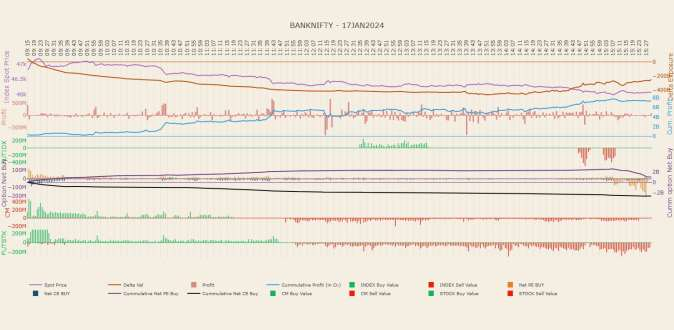
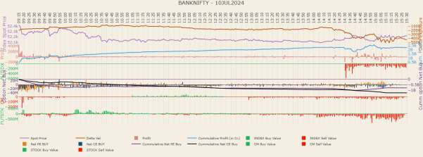
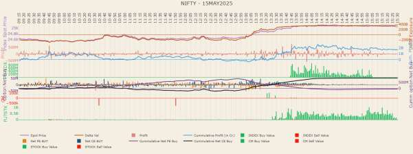

WTM/AN/MRD/MRD-SEC-3/31516/2025-26 SECURITIES AND EXCHANGE BOARD OF INDIA INTERIM ORDER UNDER SECTIONS 11(1), 11(4), 11B(1) and 11D OF THE SECURITIES AND EXCHANGE BOARD OF INDIA ACT, 1992 In respect of:
| S. No. | Name of the Entity | PAN |
| 1. | JSI Investments Private Ltd. | AAFCJ0285L |
| 2. | JSI2 Investments Private Ltd. | AAGCJ5786R |
| 3. | Jane Street Singapore Pte. Ltd. | AAGCJ1682G |
| 4. | Jane Street Asia Trading Ltd. | AAECJ7368M |
1. Based on media reports titled 'Jane Street-Millennium Suit: 'Secret' Strategy Concerns India, Hearing Reveals' and 'Ex-Jane Street trader pillories claims he stole trade secrets', published during April 2024 wherein it was inter-alia mentioned that Jane Street and its associated entities alleged unauthorised use of their proprietary trading strategies in Indian options markets, SEBI initiated preliminary examination into trading activity of Jane Street and associated entities (collectively referred to as "Jane Street Group" or "JS group") to ascertain any market abuse.
The chronology of some of the subsequent events is given in the following Table.
| Date | Event |
| April 2024 | SEBI carried out an analysis based on media reports referencing a legal dispute involving Jane Street Group for alleged unauthorised use of their proprietary trading strategies in Indian markets. |
| July 23, 2024 | NSE was asked to examine the trading activity of the JS Group to ascertain if there was any market abuse involved. |
| August 2024 | SEBI interacted with JS Group on August 20, 2024 and JS Group provided its written submission dated August 30, 2024 to SEBI explaining their trades. |
| October 1, 2024 | Separately, SEBI issued a circular announcing a series of policy steps in order to address what was seen as overtrading in index options on expiry day. |
| November 13, 2024 | NSE examination report on JS Group's trading activity was submitted |
| December 2024 | SEBI observed what appeared to be abnormally high or low volatility on weekly index options expiry days. Further, SEBI noted that there were certain entities consistently running what appeared to be by |
| S far the largest risks in 'cash equivalent' terms in F&O particularly on expiry days. EBI constituted a team of officials to further examine the issue in a more detailed and comprehensive manner. | |
| February 04, 2025 | The team of officials noted that prima facie, JS Group appeared to be engaging in activities in violation of SEBI PFUTP regulations. |
| February 6, 2025 | While the detailed examination was ongoing, with a view to ensure that JS Group desisted from undertaking trading patterns that were prima facie fraudulent and manipulative, on SEBI's instructions, NSE as a first line regulator issued a caution letter to Jane Street Singapore Pte Limited and its related entity, JSI Investments Pvt Ltd. advising them to refrain from taking large (cash-equivalent) positions and to refrain from undertaking certain trading patterns. |
| February 2025 | JS Group sent their replies to the caution letter on February 6th and 21st, 2025. |
| May 15, 2025 | In disregard of the caution letter from the Exchange issued in February 2025, and JS Group's own commitments to the Exchange, Jane Street Group was observed to continue to run very large 'cash- equivalent' positions in index options. |
2. Jane Street Group LLC is a global proprietary trading firm in the financial services industry. Jane Street employs more than 2,600 people in five offices across the United States, Europe, and Asia and trades in 45 countries.1 Jane Street Group LLC was established in the year 2000. Services are provided in the U.S. by Jane Street Capital, LLC and Jane Street Execution Services, LLC, each of which is a SEC-registered broker dealer and member of Financial Industry Regulatory Authority, USA ("FINRA"). Regulated activities are undertaken in Europe by Jane Street Financial Limited, an investment firm authorized and regulated by the U.K. Financial Conduct Authority, and Jane Street Netherlands B.V., an investment firm authorized and regulated by the Netherlands Authority for the Financial Markets (Autoriteit Financiële Markten), and in Hong Kong by Jane Street Hong Kong 1 See complaint filed by Jane Street Group LLC against Millenium Management LLC before the United States District Court Southern District of New York available at https://www.sewkis.com/wp- content/uploads/Jane-Street_amended-complaint.pdf
Limited, a regulated entity under the Hong Kong Securities and Futures Commission. Each of these entities is a wholly owned subsidiary of Jane Street Group, LLC.2
3. Upon examination of the audited financial statements of JSI Investments Private Limited (Entity No. 1 in this Order), and the related party disclosures contained therein, it was observed that Jane Street Europe Limited and Jane Street Group, LLC (supra) were disclosed as the holding company and ultimate holding company of JSI Investments Private Limited, respectively. As per the Memorandum of Association of JSI2 Investments Private Ltd. (Entity No. 2 in this Order), it is wholly owned by JSI Investments Private Limited. Additionally, Jane Street Singapore Pte. Limited (Entity No. 3 in this Order) was also described in the aforesaid financial statements as a fellow subsidiary of JSI Investments Private Limited, indicating their common control under the Jane Street Group umbrella, along with other affiliated entities. In a 'BrokerCheck Report' of Jane Street Capital LLC (also referred to in the previous paragraph), available on the website of FINRA based on filings by the said broker it discloses itself as a subsidiary of Jane Street Group LLC. Importantly, it also discloses Jane Street Asia Trading Ltd. (Entity No. 4 in this Order) as being under common control with the LLC and that it is an indirectly wholly owned subsidiary of Jane Street Group LLC.3
4. In the submission filed by Jane Street Group on August 30th, 2024 in response to the preliminary enquiries made by SEBI, the Group made submissions on behalf of the Group's companies trading in the Indian market. These submissions were with reference to trades done by all three Entities to this Order.
5. The Jane Street Group LLC's associate entities operating in India were initially identified based on the domain (i.e. janestreet.com ) provided at the time of opening of trading accounts. This domain association adds to the aforesaid conclusion that all the Entities form part of the global operations of the Jane Street Group.
2 https://www.janestreet.com/who-we-are/ 3 https://files.brokercheck.finra.org/firm/firm_103782.pdf
6. Considering the above, the activities and trades of the Entities have been viewed as group and not as individual entities, for the purpose of this Order.
7. Derivatives are instruments whose value is derived from underlying reference securities. There is a strong interrelationship between prices of derivative instruments and the prices of their underlying stocks or indices. Annexure 1 of this Order provides a basic primer around indices, and around Futures and Options on single stocks and indices such as BANKNIFTY. The following illustrations explain how some of these interrelationships come about:
8. It is pertinent to note the difference in the level of liquidity and participation across cash markets and F&O. On weekly index options expiry day, the comparable cash equivalent traded volumes in index options markets is several times the combined cash equivalent volumes traded in the associated futures and cash markets. For example, on 17 Jan 2024, an expiry day in BANKNIFTY index options where prima
facie manipulative activity of Jane Street Group was observed, the following is noted:
| Cash market total traded turnover in the 12 BANKNIFTY stock constituents (A) | INR 29,225 crores |
| Futures market total traded turnover in the 12 BANKNIFTY stock constituents (B) | INR 43,589 crores |
| Futures market traded turnover in BANKNIFTY index (C) | INR 32,607 crores |
| BANKNIFTY options cash equivalent (or Futures equivalent or delta equivalent) traded turnover (D) | INR 1,03,17,127 crores |
| Relative size of BANKNIFTY options market to cash market of its 12 constituent stocks, based on cash equivalent traded turnover (=D/A) | 353 times |
| Relative size of BANKNIFTY options market to the total of cash and futures market of its 12 constituent stocks, and BANKNIFTY index futures, based on cash equivalent traded turnover =D/(A+B+C) | 98 times |
9. As a corollary to the above, on weekly index option expiry day, many more entities and individuals trade in index options than do entities and individuals in the associated cash and futures markets. In other words, given the interrelationship between prices of derivative instruments and the prices of their underlying stocks or indices, many that trade in index options look for signals in the underlying index (determined by the smaller volumes and less number of participants in the underlying cash and futures markets), without themselves participating in these markets. For example, on 17 Jan 2024, the following was observed.
| No. of unique entities that traded in the cash market of all of the top three BANKNIFTY constituent stocks | 4,675 |
| No. of unique entities that traded in the futures contracts of BANKNIFTY index | 26,593 |
No. of unique entities that traded in the options contracts 16,15,011 of BANKNIFTY index
10. A core reason for this phenomenon is likely that market participants enjoy enormous 'leverage' from options. As an example, to take delivery of a stock priced at INR 100 in the cash market, one needs to put up cash to the extent of INR 100.
To buy a futures contract on the same underlying stock, one needs to put up adequate margin, say of INR 20. To that extent, there is an effective leverage of five times available to the participant, in taking up the same cash-equivalent exposure via futures markets, as opposed to via cash markets. Of course, the leverage also implies higher risk for the participant. In the options market, on the other hand, if one were to buy a call option at a strike price of INR 100 (At-The- Money or ATM strike) on two shares of the same underlying stock, with just one day to expiry and assuming 25% implied volatility, the option may only cost around INR 1. The underlying cash-equivalent economic exposure of this long-call ATM option position on two shares, at the time of trading, would be equivalent to being long one underlying share (the 'cash equivalent' or 'future equivalent' or 'delta equivalent' risk). This position has been put up with an outlay of just INR 1, representing a 100-times leverage over taking the same position directly in the cash market, or a 20-times leverage over taking the same position via futures markets.
11. This leveraged payoff from buying options close to expiry, where one can take on enormous exposure in relation to the size of the capital outlay, with a known and limited downside (to the extent of option premium paid) but with the prospects of high gains if the prices were to move sharply and favourably, appears to attract traders who only trade in index options, and not in the underlying cash markets.
13. For the reasons earlier recorded in this Order, for the purpose of the examination, dealings in securities by the Entities have been viewed as a collective group ('JS Group') and not as individual entities. As noted earlier, SEBI had observed that the JS Group was consistently running what appeared to be by far the largest risks in 'cash equivalent' terms in F&O particularly on index option expiry days. While trading patterns constitute the subject matter of examination to assess illegality (if any), profits/ losses made can be a useful alert to prepare a sample set of days and contracts for deeper analysis of the underlying risks and trading patterns.
However, it must be emphasised that trading profits by themselves are certainly not an indication of any illegality. The scale of profits made do not form the basis of the examination's ultimate conclusions/ findings – only the underlying trading patterns observed do.
14. Methodology for Identification of impugned trading days
| Profit/ (Loss) Summary (in ₹ crore) | |||||||
| Name | PAN | Total profit | Total profit in 'Index Options' | Total profit in 'Index Futures' | Total profit in 'Stock Options' | Total profit in 'Stock Futures' | Total profit in 'Stocks' i.e. cash segment |
| Jane Street Asia Trading Limited | AAECJ7368M | 6,929.56 | 7,650.34 | (85.62) | 34.82 | (668.87) | (1.12) |
| JSI2 Investments Private Limited | AAGCJ5786R | (168.67) | (168.67) | - | - | - | - |
| JSI Investments Private Limited | AAFCJ0285L | 4,104.61 | 4,392.03 | 0.00 | (0.37) | 0.00 | (287.05) |
| Jane Street Singapore Pte Limited | AAGCJ1682G | 25,636.62 | 31,415.63 | (105.19) | 865.54 | (6,539.36) | 0.00 |
| Total | 36,502.12 | 43,289.33 | (190.81) | 899.99 | (7,208.23) | (288.17) |
15. "Intra-day Index Manipulation" Strategy – Analysis of trading on January 17, 2024 as a sample
| Previous Day Close (Jan 16, 2024) | 48,125.10 |
| Open (Jan 17, 2024) | 46,573.95 |
| High (Jan 17, 2024) | 47,212.75 |
| Low (Jan 17, 2024) | 45,979.60 |
| Close (Jan 17, 2024) | 46,064.45 |
| Step | Time Window | Action | Impact on Market | Impact on Index Options |
| 1 | Patch I: 09:15 AM – 11:46:59 AM | In an otherwise falling market, JS Group net purchases INR 4,370.03 crores of BANKNIFTY constituents in cash and futures markets, which are significant quantities in relation to the trading volumes in these markets. The purchases are aggressive, in a manner that tends to push up prices. | This action supports or pushes up the prices of BANKNIFTY constituents and hence the index itself. | As BANKNIFTY Index is supported/ rises from the lows, Put options on the index become cheaper, while Call options become expensive. |
| Simultaneously, at a time when participants in index options markets are misled by the above support for BANKNIFTY, JS Group builds effectively INR 32,114.96 crores of bearish positions in the much more liquid BANKNIFTY index options by buying cheap Put options and selling expensive Call options. | JS Group builds large short BANKNIFTY positions, 7.3 times the size of the long cash/ futures positions | |||
| 2 | Patch II: 11:49 AM – 15:30 PM | JS Group reverses and sells practically all of the net cash/ futures positions in BANKNIFTY constituent stocks that were bought in Patch I. The sizes are large, compared to market trading volumes in these segments. The sales are aggressive, in a manner that pushes down prices in the component stocks and hence index. JS Group books losses in intraday cash/ futures market trading. | Creates downward pressure in BANKNIFTY component stocks and hence index | Put options now rise in value, Call options drop in value – reversing the artificial moves in the first patch |
| JS Group now profits from the much larger BANKNIFTY index options positions (long puts and short calls) including those built during Patch I. It unwinds some of the positions, and allows the others to expire at a profit. | Profits in index options more than compensate for the JS Group's losses in intraday cash / futures trading, |
The patches are now examined in detail below.
| Scrip6 | Buy start time | Buy end time | Open | High | Low | Close | No. of buy trades - JS | Buy trade quantity - JS | Buy side TV7 in INR Crs. – JS (A) | No. of buy trades – Market- wide | Buy trade quantity – Market-wide | Buy side TV in INR Crs. – Market- wide (B) | JS's buy traded value relative to market- wide traded value (in %) (A/B) |
| HDFCBANK | 09:15:43 | 11:06:05 | 1586.2 | 1596.8 | 1570.1 | 1574.6 | 22,283 | 19,99,785 | 316.41 | 7,50,562 | 3,47,95,972 | 5,506.76 | 5.75% |
| ICICIBANK | 09:15:45 | 11:20:15 | 994.2 | 1007.8 | 985.05 | 987.75 | 34,673 | 44,62,505 | 445.03 | 2,63,502 | 1,91,31,083 | 1,907.26 | 23.33% |
| AXISBANK | 09:15:43 | 11:20:12 | 1094.1 | 1115 | 1091.9 | 1100.3 | 34,343 | 25,10,272 | 277.13 | 1,93,128 | 1,04,51,176 | 1,153.12 | 24.03% |
| SBIN | 09:15:45 | 11:20:11 | 627.1 | 636.8 | 626.5 | 628.7 | 27,894 | 34,45,606 | 217.67 | 1,75,825 | 1,36,62,409 | 862.53 | 25.24% |
| KOTAKBANK | 09:15:43 | 11:20:09 | 1819.15 | 1834.7 | 1795 | 1799.9 | 35,815 | 10,48,868 | 190.26 | 1,44,328 | 45,20,879 | 819.78 | 23.21% |
| INDUSINDBK | 09:15:43 | 11:19:54 | 1647.15 | 1677.1 | 1645.3 | 1653.4 | 21,172 | 7,20,721 | 119.66 | 92,866 | 28,84,264 | 478.48 | 25.01% |
| FEDERALBNK | 09:15:47 | 11:07:41 | 146.75 | 149.5 | 146.25 | 147 | 16,363 | 39,16,350 | 57.94 | 1,22,840 | 1,81,73,024 | 268.48 | 21.58% |
| BANKBARODA | 09:15:47 | 11:08:00 | 227.45 | 232.35 | 227.25 | 230.55 | 13,767 | 31,54,397 | 72.64 | 71,584 | 1,28,09,188 | 294.70 | 24.65% |
| IDFCFIRSTB | 09:15:50 | 11:07:40 | 87.05 | 89.65 | 86.8 | 87.2 | 5,515 | 67,54,912 | 59.56 | 82,395 | 4,27,89,694 | 376.65 | 15.81% |
| AUBANK | 09:15:45 | 11:20:08 | 763.55 | 783.95 | 747.85 | 758.2 | 18,274 | 5,73,988 | 43.76 | 79,577 | 23,03,461 | 175.45 | 24.94% |
| PNB | 09:15:57 | 11:07:28 | 97 | 98.9 | 96.8 | 97.95 | 4,940 | 52,38,342 | 51.53 | 74,739 | 3,17,55,556 | 311.79 | 16.53% |
It is pertinent to note that during this Patch I, JS only undertook purchase trades in these constituent stocks (cash markets).
| Scrip | Expiry | Buy start time | Buy end time | Open | High | Low | Close | No. of buy trades - JS | Buy trade quantity - JS | Buy side TV in INR Crs. – JS (A) | No. of buy trades – Market- wide | Buy trade quantity – Market-wide | Buy side TV in INR Crs. – Market- wide (B) | JS's traded value relative to market- wide traded value (in %) (A/B) |
| HDFCBANK | 25-Jan-24 | 09:57:43 | 09:58:05 | 1587.7 | 1589.1 | 1587.1 | 1589 | 52 | 42,350 | 6.73 | 152 | 1,11,650 | 17.73 | 37.93% |
| ICICIBANK | 25-Jan-24 | 09:15:05 | 11:46:50 | 990 | 1008.7 | 982 | 983.2 | 6,751 | 64,82,000 | 646.09 | 33,274 | 2,78,70,500 | 2,777.55 | 23.26% |
| AXISBANK | 25-Jan-24 | 09:15:08 | 11:46:55 | 1097.8 | 1115.7 | 1094.2 | 1094.8 | 4,051 | 31,53,125 | 348.26 | 19,070 | 1,35,62,500 | 1,496.74 | 23.27% |
| SBIN | 25-Jan-24 | 09:15:07 | 11:46:18 | 630.6 | 637.2 | 626.7 | 628.85 | 3,116 | 57,97,500 | 366.75 | 15,173 | 2,64,58,500 | 1,672.65 | 21.93% |
| KOTAKBANK | 25-Jan-24 | 09:15:05 | 11:46:59 | 1820 | 1837.5 | 1789.3 | 1791.9 | 3,685 | 19,20,400 | 349.02 | 16,879 | 79,68,800 | 1,448.38 | 24.10% |
| INDUSINDBK | 25-Jan-24 | 09:15:08 | 11:46:55 | 1649.35 | 1678 | 1644.3 | 1650.2 | 2,206 | 12,51,000 | 208.02 | 9,629 | 52,62,000 | 874.01 | 23.80% |
| FEDERALBNK | 25-Jan-24 | 09:15:05 | 11:46:28 | 146.85 | 149.7 | 145.65 | 146.35 | 1,215 | 71,35,000 | 105.51 | 6,476 | 3,61,90,000 | 534.59 | 19.74% |
| BANKBARODA | 25-Jan-24 | 09:15:06 | 11:46:47 | 228.6 | 233.95 | 226.95 | 232.15 | 1,798 | 61,60,050 | 142.49 | 7,892 | 2,68,25,175 | 619.89 | 22.99% |
| IDFCFIRSTB | 25-Jan-24 | 09:15:05 | 11:46:50 | 87.3 | 89.8 | 86.75 | 86.9 | 1,293 | 1,29,45,000 | 113.95 | 8,667 | 7,84,05,000 | 689.96 | 16.52% |
| AUBANK | 25-Jan-24 | 09:15:16 | 11:46:56 | 758 | 777 | 747 | 751.8 | 1,196 | 15,85,000 | 120.52 | 5,647 | 67,66,000 | 513.98 | 23.45% |
| PNB | 25-Jan-24 | 09:15:06 | 11:41:32 | 96.85 | 100.25 | 96.3 | 99.3 | 977 | 1,12,72,000 | 111.13 | 6,560 | 6,56,16,000 | 647.31 | 17.17% |
Interim Order in the matter of Index manipulation by Jane Street Group Page 16 of 105
| Scrip | Buy order start time | Buy order end time | No. of buy orders entered | No. of buy orders above LTP | No. of buy orders at LTP | No. of buy orders below LTP | Order price based LTP impact for orders placed above LTP* (in INR) (A) | Order price based LTP impact for orders placed at LTP* (in INR) (B) | Order price based LTP impact for orders placed below LTP* (in INR) (C) | Order price based net LTP impact* (in INR) (A)+(B)+(C) |
| HDFCBANK | 09:15:43 | 11:06:05 | 7184 | 1607 | 4677 | 900 | 282.35 | - | -152.05 | 130.30 |
| ICICIBANK | 09:15:45 | 11:20:15 | 15316 | 7368 | 6318 | 1630 | 1,847.45 | - | -177.75 | 1,669.70 |
| AXISBANK | 09:15:43 | 11:20:12 | 18743 | 9344 | 7295 | 2104 | 2,224.85 | - | -260.00 | 1,964.85 |
| SBIN | 09:15:45 | 11:20:11 | 12692 | 6042 | 5608 | 1042 | 912.75 | - | -84.10 | 828.65 |
| KOTAKBANK | 09:15:43 | 11:20:09 | 20274 | 7862 | 10337 | 2075 | 2,929.70 | - | -276.65 | 2,653.05 |
| INDUSINDBK | 09:15:43 | 11:19:54 | 13601 | 8112 | 4252 | 1237 | 3,147.50 | - | -186.70 | 2,960.80 |
| FEDERALBNK | 09:15:47 | 11:07:41 | 6118 | 2468 | 3145 | 505 | 133.80 | - | -25.85 | 107.95 |
| BANKBARODA | 09:15:47 | 11:08:00 | 6990 | 3146 | 3295 | 549 | 215.45 | - | -31.25 | 184.20 |
| IDFCFIRSTB | 09:15:50 | 11:07:40 | 774 | 327 | 403 | 44 | 17.40 | - | -2.25 | 15.15 |
| AUBANK | 09:15:45 | 11:20:08 | 11161 | 5521 | 4430 | 1210 | 1,278.15 | - | -127.15 | 1,151.00 |
| PNB | 09:15:57 | 11:07:28 | 613 | 279 | 304 | 30 | 14.90 | - | -1.55 | 13.35 |
*The figures are an aggregation of the difference between the "Order Limit Price" and the "Last Traded Price" at the time of order entry/ modification.
8 For this table, only orders that resulted in trades during the patch have been considered. Further, calendar spread orders have not been considered in aforementioned data.
Interim Order in the matter of Index manipulation by Jane Street Group Page 18 of 105 Table 10 - Trade level LTP-based analysis
| Scrip | Buy trade start time | Buy trade end time | No. of buy trades executed | No. of buy trades above LTP | No. of buy trades at LTP | No. of buy trades below LTP | Trade price based LTP impact for trades executed above LTP* (in INR) (A) | Trade price based LTP impact for trades executed at LTP* (in INR) (B) | Trade price based LTP impact for trades executed below LTP* (in INR) (C) | Trade price based net LTP impact created by JS* (in INR) (A)+(B)+(C) | Trade price based net LTP impact created by rest of the market participants9 |
| HDFCBANK | 09:15:43 | 11:06:05 | 22283 | 1618 | 19737 | 928 | 279.40 | - | -156.10 | 123.30 | -134.9 |
| ICICIBANK | 09:15:45 | 11:20:15 | 34673 | 7512 | 25456 | 1705 | 1,838.15 | - | -185.30 | 1,652.85 | -1659.3 |
| AXISBANK | 09:15:43 | 11:20:12 | 34343 | 9326 | 22880 | 2137 | 2,197.20 | - | -262.70 | 1,934.50 | -1928.3 |
| SBIN | 09:15:45 | 11:20:11 | 27894 | 6036 | 20798 | 1060 | 905.10 | - | -85.20 | 819.90 | -818.3 |
| KOTAKBANK | 09:15:43 | 11:20:09 | 35815 | 7850 | 25830 | 2135 | 2,885.95 | - | -282.75 | 2,603.20 | -2622.45 |
| INDUSINDBK | 09:15:43 | 11:19:54 | 21172 | 8147 | 11759 | 1266 | 3,113.40 | - | -189.65 | 2,923.75 | -2917.5 |
| FEDERALBNK | 09:15:47 | 11:07:41 | 16363 | 2464 | 13394 | 505 | 133.60 | - | -25.85 | 107.75 | -107.5 |
| BANKBARODA | 09:15:47 | 11:08:00 | 13767 | 3144 | 10054 | 569 | 214.05 | - | -32.80 | 181.25 | -178.15 |
| IDFCFIRSTB | 09:15:50 | 11:07:40 | 5515 | 327 | 5144 | 44 | 17.40 | - | -2.25 | 15.15 | -15 |
| AUBANK | 09:15:45 | 11:20:08 | 18274 | 5590 | 11423 | 1261 | 1,266.25 | - | -131.35 | 1,134.90 | -1140.25 |
| PNB | 09:15:57 | 11:07:28 | 4940 | 279 | 4631 | 30 | 14.90 | - | -1.55 | 13.35 | -12.4 |
*The figures are an aggregation of the difference between the "Trade Price" and the "Last Traded Price"
9 The LTP impact attributable to the rest of the market was computed by adjusting the total price movement (vis-à-vis the respective scrip), for the impact created by Jane Street's trades.
Interim Order in the matter of Index manipulation by Jane Street Group Page 19 of 105
| Scrip | Expiry | Buy order start time | Buy order end time | No. of buy orders entered | No. of buy orders above LTP | No. of buy orders at LTP | No. of buy orders below LTP | Order price based LTP impact for orders placed above LTP* (in INR) (A) | Order price based LTP impact for orders placed at LTP* (in INR) (B) | Order price based LTP impact for orders placed below LTP* (in INR) (C) | Order price based net LTP impact* (in INR) (A)+(B)+(C) |
| HDFCBANK | 25-Jan-24 | 09:57:43 | 09:58:05 | 30 | 20 | 4 | 6 | 4.30 | - | -0.65 | 3.65 |
| ICICIBANK | 25-Jan-24 | 09:15:05 | 11:46:50 | 4574 | 2977 | 1086 | 511 | 437.35 | - | -50.65 | 386.70 |
| AXISBANK | 25-Jan-24 | 09:15:08 | 11:46:55 | 3222 | 2368 | 421 | 433 | 432.30 | - | -51.10 | 381.20 |
| SBIN | 25-Jan-24 | 09:15:07 | 11:46:18 | 2052 | 1332 | 445 | 275 | 160.85 | - | -22.45 | 138.40 |
| KOTAKBANK | 25-Jan-24 | 09:15:05 | 11:46:59 | 2730 | 1913 | 401 | 416 | 507.40 | - | -75.90 | 431.50 |
| INDUSINDBK | 25-Jan-24 | 09:15:08 | 11:46:55 | 1916 | 1445 | 162 | 309 | 461.35 | - | -69.55 | 391.80 |
| FEDERALBNK | 25-Jan-24 | 09:15:05 | 11:46:28 | 599 | 291 | 246 | 62 | 19.55 | - | -3.60 | 15.95 |
| BANKBARODA | 25-Jan-24 | 09:15:06 | 11:46:47 | 1037 | 688 | 272 | 77 | 59.45 | - | -4.85 | 54.60 |
| IDFCFIRSTB | 25-Jan-24 | 09:15:05 | 11:46:50 | 439 | 140 | 275 | 24 | 7.45 | - | -1.20 | 6.25 |
| AUBANK | 25-Jan-24 | 09:15:16 | 11:46:56 | 1068 | 782 | 121 | 165 | 242.20 | - | -28.80 | 213.40 |
| PNB | 25-Jan-24 | 09:15:06 | 11:41:32 | 404 | 154 | 231 | 19 | 8.35 | - | -0.95 | 7.40 |
*The figures are an aggregation of the difference between the "Order Limit Price" and the "Last Traded Price" at the time of order entry/ modification.
10 For this table, only orders that resulted in trades during the patch have been considered. Further, calendar spread orders have not been considered in aforementioned data.
Interim Order in the matter of Index manipulation by Jane Street Group Page 20 of 105 Table 12 - Trade level LTP-based analysis
| Scrip | Expiry | Buy trade start time | Buy trade end time | No. of buy trades executed | No. of buy trades above LTP | No. of buy trades at LTP | No. of buy trades below LTP | Trade price based LTP impact for trades executed above LTP* (in INR) (A) | Trade price based LTP impact for trades executed at LTP* (in INR) (B) | Trade price based LTP impact for trades executed below LTP* (in INR) (C) | Trade price based net LTP impact* (in INR) (A)+(B)+(C) | Trade price based net LTP impact created by rest of the market participants11 |
| HDFCBANK | 25-Jan-24 | 09:57:43 | 09:58:05 | 52 | 21 | 25 | 6 | 4.25 | - | -0.65 | 3.60 | -2.3 |
| ICICIBANK | 25-Jan-24 | 09:15:05 | 11:46:50 | 6751 | 2996 | 3237 | 518 | 436.30 | - | -51.30 | 385.00 | -391.8 |
| AXISBANK | 25-Jan-24 | 09:15:08 | 11:46:55 | 4051 | 2378 | 1236 | 437 | 430.20 | - | -51.80 | 378.40 | -381.4 |
| SBIN | 25-Jan-24 | 09:15:07 | 11:46:18 | 3116 | 1340 | 1500 | 276 | 160.45 | - | -23.05 | 137.40 | -139.15 |
| KOTAKBANK | 25-Jan-24 | 09:15:05 | 11:46:59 | 3685 | 1927 | 1338 | 420 | 505.80 | - | -76.40 | 429.40 | -457.5 |
| INDUSINDBK | 25-Jan-24 | 09:15:08 | 11:46:55 | 2206 | 1454 | 438 | 314 | 459.20 | - | -70.55 | 388.65 | -387.8 |
| FEDERALBNK | 25-Jan-24 | 09:15:05 | 11:46:28 | 1215 | 290 | 863 | 62 | 19.50 | - | -3.60 | 15.90 | -16.4 |
| BANKBARODA | 25-Jan-24 | 09:15:06 | 11:46:47 | 1798 | 687 | 1034 | 77 | 59.35 | - | -4.85 | 54.50 | -50.95 |
| IDFCFIRSTB | 25-Jan-24 | 09:15:05 | 11:46:50 | 1293 | 140 | 1129 | 24 | 7.40 | - | -1.20 | 6.20 | -6.6 |
| AUBANK | 25-Jan-24 | 09:15:16 | 11:46:56 | 1196 | 787 | 239 | 170 | 240.90 | - | -29.45 | 211.45 | -217.65 |
| PNB | 25-Jan-24 | 09:15:06 | 11:41:32 | 977 | 154 | 804 | 19 | 8.35 | - | -0.95 | 7.40 | -4.95 |
11 The LTP impact attributable to the rest of the market was computed by adjusting the total price movement (vis-à-vis the respective scrip) for the impact created by Jane Street's trades.
Interim Order in the matter of Index manipulation by Jane Street Group Page 21 of 105
47400 47200 47000 46800 46600 46400 46200 46000 45800 45600 45400 45200
0 0 : 5 1 : 9 0
0 0 : 0 3 : 9 0
0 0 : 5 4 : 9 0
0 0 : 0 0 : 0 1
0 0 : 5 1 : 0 1
0 0 : 0 3 : 0 1
0 0 : 5 4 : 0 1
0 0 : 0 0 : 1 1
0 0 : 5 1 : 1 1
0 0 : 0 3 : 1 1
0 0 : 5 4 : 1 1
0 0 : 0 0 : 2 1
0 0 : 5 1 : 2 1
0 0 : 0 3 : 2 1
0 0 : 5 4 : 2 1
0 0 : 0 0 : 3 1
0 0 : 5 1 : 3 1
0 0 : 0 3 : 3 1
0 0 : 5 4 : 3 1
0 0 : 0 0 : 4 1
0 0 : 5 1 : 4 1
0 0 : 0 3 : 4 1
0 0 : 5 4 : 4 1
0 0 : 0 0 : 5 1
0 0 : 5 1 : 5 1
0 0 : 0 3 : 5 1
| HDFC Bank | Kotak Bank | ICICI Bank | Axis Bank SBI Bank INDUSIND Bank | |||||||||
| Time (HH:MM) | LTP Diff – JS | LTP Diff- Other than JS | LTP Diff - JS | LTP Diff- Other than JS | LTP Diff - JS | LTP Diff- Other than JS | LTP Diff - JS | LTP Diff- Other than JS | LTP Diff - JS | LTP Diff- Other than JS | LTP Diff - JS | LTP Diff- Other than JS |
| 09:15 | 1.15 | 16.6 | 14.8 | -13.65 | 2.25 | 7.85 | 10.6 | 3.9 | 4.2 | 0.35 | 7.8 | -5.45 |
| 09:16 | 5.1 | -3.7 | 54.95 | -53.2 | 35.85 | -31.95 | 31.25 | -30.6 | 21.75 | -20.05 | 61.6 | -63.9 |
| 09:17 | 19.55 | -14.3 | 49 | -48.85 | 24.75 | -25.2 | 35.9 | -35.7 | 27.8 | -26.9 | 40.65 | -39.85 |
| 09:18 | 2.3 | -1.5 | 8.4 | -7.05 | 2.2 | -3.65 | 2.65 | 1.65 | 2 | -1.65 | 4.65 | -2.7 |
| 09:19 | 0.5 | -1.7 | 0.05 | 3.6 | 0.75 | 2.8 | 0.4 | 1.4 | 0.1 | 0.25 | 0.05 | |
| 09:20 | -1.15 | -7.35 | -0.1 | 2 | -1.05 | 2.2 | 8.8 | -0.05 | 3.75 | 11.55 | ||
| 09:21 | 14 | -13.5 | 10.9 | -15.7 | 8.05 | -8.65 | 24.15 | -26.85 | 11.3 | -11.45 | 26.05 | -22.75 |
| 09:22 | 10.4 | -14.65 | 35.25 | -31.6 | 29.25 | -31.5 | 53.9 | -49.05 | 39.8 | -38.65 | 131.35 | -125.75 |
| Total | 51.85 | -40.1 | 173.25 | -164.45 | 102.05 | -88.1 | 158.85 | -126.45 | 106.9 | -94.35 | 272.1 | -248.8 |
| LTP - Premium of PE option at various strikes at close of | |||||||||||||
| BANKNIFTY Index Value | 46573.93 | 46814.02 | 46879.13 | 47014.53 | 47060.41 | 47106.62 | 47143.73 | 47169.09 | 47176.97 | 46072.42 | |||
| Trade Date | SYMBOL | EXPIRY_DATE | CONTRACT | Open | 09:15 | 09:16 | 09:17 | 09:18 | 09:19 | 09:20 | 09:21 | 09:22 | 15:29 |
| 17/01/2024 | BANKNIFTY | 17/01/2024 | BANKNIFTY_PE_2024-01- 17_46800 | 229.6 | 123.55 | 131.05 | 131.45 | 104.25 | 82.6 | 65.25 | 72 | 70.05 | 734.75 |
| 17/01/2024 | BANKNIFTY | 17/01/2024 | BANKNIFTY_PE_2024-01- 17_46900 | 494.85 | 133.85 | 154.4 | 159 | 128.65 | 104.15 | 85.15 | 93.8 | 92.1 | 835 |
| 17/01/2024 | BANKNIFTY | 17/01/2024 | BANKNIFTY_PE_2024-01- 17_47000 | 349.95 | 144.9 | 182.1 | 193.3 | 157.9 | 131.7 | 111 | 122 | 121.55 | 935.8 |
| 17/01/2024 | BANKNIFTY | 17/01/2024 | BANKNIFTY_PE_2024-01- 17_47100 | 562.9 | 155 | 212.05 | 233.05 | 192.25 | 163.95 | 142.2 | 156.5 | 156.25 | 1038.95 |
| 17/01/2024 | BANKNIFTY | 17/01/2024 | BANKNIFTY_PE_2024-01- 17_47200 | 499.95 | 171.35 | 250.3 | 279.9 | 234.45 | 204.15 | 181.3 | 199.95 | 200.25 | 1135.1 |
| 17/01/2024 | BANKNIFTY | 17/01/2024 | BANKNIFTY_PE_2024-01- 17_47300 | 700 | 189.95 | 292.85 | 334.5 | 283.3 | 251.5 | 226.25 | 250.95 | 251.5 | 1234.75 |
| 17/01/2024 | BANKNIFTY | 17/01/2024 | BANKNIFTY_PE_2024-01- 17_47400 | 790 | 224 | 346.8 | 396.95 | 340.15 | 307.75 | 283.1 | 311.85 | 312.35 | 1338 |
| 17/01/2024 | BANKNIFTY | 17/01/2024 | BANKNIFTY_PE_2024-01- 17_47500 | 588 | 272.55 | 408.4 | 465.7 | 406.15 | 373.65 | 349 | 380.95 | 382.4 | 1435.55 |
| 17/01/2024 | BANKNIFTY | 17/01/2024 | BANKNIFTY_PE_2024-01- 17_47600 | 817.35 | 333.2 | 481.7 | 544.95 | 478.85 | 445.95 | 420.7 | 457.55 | 458.6 | 1539 |
| 17/01/2024 | BANKNIFTY | 17/01/2024 | BANKNIFTY_PE_2024-01- 17_47700 | 535.75 | 410.75 | 561.8 | 627.7 | 560.5 | 527.35 | 502.55 | 538.5 | 543.2 | 1380 |
| 17/01/2024 | BANKNIFTY | 2024-01-17 | BANKNIFTY_CE_2024-01- 17_46800 | 198.7 | 653.45 | 511.15 | 440.3 | 481.15 | 491.9 | 501.45 | 469 | 458.15 | 0.65 |
| 17/01/2024 | BANKNIFTY | 2024-01-17 | BANKNIFTY_CE_2024-01- 17_46900 | 157.35 | 565.45 | 432.25 | 370.45 | 407.1 | 412.85 | 421.75 | 391.35 | 380.2 | 0.20 |
| 17/01/2024 | BANKNIFTY | 2024-01-17 | BANKNIFTY_CE_2024-01- 17_47000 | 84 | 479.9 | 361.65 | 302.7 | 336.25 | 340.5 | 347.9 | 318.85 | 308.05 | 0.3 |
| 17/01/2024 | BANKNIFTY | 2024-01-17 | BANKNIFTY_CE_2024-01- 17_47100 | 77.05 | 389.05 | 290.35 | 243.95 | 271.1 | 274.7 | 278.8 | 253.4 | 242.65 | 0.5 |
| 17/01/2024 | BANKNIFTY | 2024-01-17 | BANKNIFTY_CE_2024-01- 17_47200 | 146.75 | 303.65 | 229.95 | 190.6 | 212.95 | 214.35 | 217.75 | 196.35 | 186 | 0.35 |
| 17/01/2024 | BANKNIFTY | 2024-01-17 | BANKNIFTY_CE_2024-01- 17_47300 | 98.4 | 223.8 | 174.35 | 145.1 | 161.4 | 161.95 | 164.85 | 147.2 | 138.8 | 0.9 |
| 17/01/2024 | BANKNIFTY | 2024-01-17 | BANKNIFTY_CE_2024-01- 17_47400 | 26.75 | 157.45 | 126.9 | 107.45 | 118.4 | 119.05 | 120.75 | 107.9 | 99.6 | 0.3 |
| 17/01/2024 | BANKNIFTY | 2024-01-17 | BANKNIFTY_CE_2024-01- 17_47500 | 21.25 | 106.5 | 89.65 | 77.5 | 85.1 | 84.75 | 86.5 | 77.7 | 70.75 | 0.45 |
| 17/01/2024 | BANKNIFTY | 2024-01-17 | BANKNIFTY_CE_2024-01- 17_47600 | 15 | 70.4 | 62.5 | 54.8 | 58.8 | 58.25 | 59.85 | 53.75 | 48.1 | 0.2 |
| 17/01/2024 | BANKNIFTY | 2024-01-17 | BANKNIFTY_CE_2024-01- 17_47700 | 15 | 48.35 | 43.5 | 38.45 | 39.8 | 39.05 | 40.55 | 36.5 | 32.25 | 0.2 |
| Call Option | PUT Option | ||||||||||||||
| Strike | Call long (09:15 to 09:22) | Call short (09:15 to 09:22) | Delta Exposure | Strike | Put long(09:15 to 09:22) | Put short(09:15 to 09:22) | Delta Exposure | ||||||||
| Premium | Premium | Premium | Premium | ||||||||||||
| Min | Max | Qty | Min | Max | Qty | Min | Max | Qty | Min | Max | Qty | ||||
| 44500 | - | - | - 39500 | - | 0.55 | 1.15 | 1,82,340 | - | |||||||
| 45700 | - | - | - 40000 | - | 0.75 | 1.10 | 34,920 | - | |||||||
| 45800 | - | - | - 40500 | - | 0.65 | 1.25 | 17,400 | - | |||||||
| 46000 | 1225 | 1225 | 570 | - | 2,66,81,135 | 41000 | - | 0.70 | 1.10 | 16,425 | - | ||||
| 46100 | - | - | - 41500 | 0.95 | 0.95 | 900 | 0.85 | 1.65 | 1,29,705 | - | |||||
| 46200 | - | - | - 42000 | 0.9 | 0.9 | 6,300 | 0.85 | 1.80 | 1,23,690 | - | |||||
| 46300 | - | - | - 42500 | 1.05 | 1.15 | 13,500 | 0.75 | 1.75 | 1,06,575 | - | |||||
| 46400 | - | 750 | 800 | 960 | -4,17,79,323 | 43000 | 1.05 | 1.05 | 5,400 | 0.85 | 2.00 | 1,33,230 | - | ||
| 46500 | 730 | 770 | 4,425 | 700 | 722 | 2,250 | 9,99,05,552 | 43500 | 1.2 | 1.35 | 5,400 | 1.10 | 2.65 | 69,105 | - |
| 46600 | 593.55 | 677.5 | 1,005 | 591 | 861 | 3,420 | -9,53,84,440 | 44000 | 1.8 | 1.8 | 4,500 | 1.25 | 3.15 | 1,39,050 | - |
| 46700 | 508.65 | 585 | 3,330 | 500 | 781 | 4,920 | -5,95,22,805 | 44200 | - | 1.60 | 2.65 | 47,925 | - | ||
| 46800 | 429.65 | 527.9 | 15,825 | 427 | 690 | 31,995 | -50,48,16,880 | 44300 | - | 1.50 | 2.85 | 1,02,420 | - | ||
| 46900 | 357.55 | 477.3 | 24,735 | 362 | 600 | 38,265 | -37,13,47,831 | 44400 | - | 1.65 | 2.95 | 82,080 | - | ||
| 47000 | 287.5 | 606.3 | 69,210 | 287 | 660 | 2,11,710 | -3,43,82,45,169 | 44500 | 2.1 | 2.35 | 8,100 | 1.70 | 2.80 | 1,39,020 | - |
| 47100 | 229.8 | 421 | 40,140 | 228 | 417 | 4,31,280 | -9,21,87,45,105 | 44600 | 2.3 | 2.3 | 900 | 1.90 | 3.00 | 55,995 | - |
| 47200 | 146.9 | 422.95 | 50,055 | 177 | 328 | 7,90,050 | -14,68,92,82,417 | 44700 | - | 2.00 | 2.95 | 1,18,980 | - | ||
| 47300 | 136.05 | 313 | 32,940 | 131 | 249 | 4,24,620 | -6,36,15,71,301 | 44800 | 2.55 | 2.55 | 900 | 2.20 | 3.00 | 79,770 | - |
| 47400 | 98.05 | 275.7 | 17,670 | 96 | 253 | 2,32,995 | -1,56,62,44,094 | 44900 | - | 2.15 | 2.55 | 1,20,330 | - | ||
| 47500 | 69 | 235.3 | 40,950 | 61 | 193 | 97,710 | -60,45,18,616 | 45000 | - | 2.65 | 3.15 | 1,68,210 | - | ||
| 47600 | 47.95 | 152.7 | 12,780 | 47 | 134 | 30,960 | -15,81,54,968 | 45100 | - | 3.00 | 3.35 | 21,750 | - | ||
| 47700 | 32.15 | 92 | 10,665 | 31 | 82 | 25,200 | -8,92,97,401 | 45200 | - | - | - | ||||
| 47800 | 21.55 | 44.25 | 28,050 | 21 | 43 | 15,135 | 3,84,59,253 | 45300 | - | - | - | ||||
| 47900 | 15.4 | 23.4 | 12,660 | 17 | 33 | 6,180 | 1,69,83,757 | 45400 | - | - | - | ||||
| 48000 | 12 | 16.75 | 36,180 | 14 | 17 | 5,355 | 5,59,55,527 | 45500 | - | 4.25 | 4.95 | 1,72,290 | 19,40,671 | ||
| 48100 | 4.3 | 14.5 | 24,510 | 10 | 15 | 4,185 | 2,30,22,245 | 45600 | - | 5.90 | 6.95 | 92,025 | 26,00,992 | ||
| 48200 | 9.8 | 12 | 40,935 | 11 | 13 | 1,740 | 2,52,97,750 | 45700 | - | 5.80 | 6.20 | 23,175 | 14,19,205 | ||
| 48300 | 2.1 | 12 | 2,94,990 | - | 13,17,67,178 | 45800 | - | - | - | ||||||
| 48400 | 1.65 | 9.1 | 4,05,510 | - | 11,22,84,731 | 45900 | 44.6 | 44.8 | 900 | - | -10,57,529 | ||||
| 48500 | 2.15 | 7.15 | 3,15,690 | - | 4,06,94,634 | 46000 | 16.4 | 72.85 | 4,095 | 16.95 | 24.00 | 6,105 | 14,33,894 | ||
| 48600 | 2 | 6.2 | 1,11,975 | - | 73,35,299 | 46100 | 14.5 | 29.1 | 7,425 | 27.55 | 32.45 | 465 | -61,15,749 | ||
| 48700 | 2 | 5.45 | 1,14,150 | - | 37,64,471 | 46200 | 12.7 | 34.95 | 8,250 | 20.00 | 38.00 | 7,050 | 18,18,323 | ||
| 48800 | 1.8 | 6.15 | 1,58,700 | - | 29,87,458 | 46300 | 14.5 | 86.65 | 11,925 | 16.60 | 48.70 | 1,875 | -1,73,22,677 | ||
| 48900 | 2.75 | 6.35 | 2,59,860 | - | 21,25,892 | 46400 | 18.95 | 60.35 | 11,265 | 24.15 | 60.00 | 7,800 | -11,18,168 | ||
| 49000 | 2.25 | 4.8 | 5,040 | - | - 46500 | 25.15 | 90.2 | 31,260 | 28.45 | 76.60 | 76,890 | 24,55,07,410 | |||
| 49100 | - | - | - 46600 | 33.25 | 93.05 | 38,205 | 33.15 | 94.00 | 62,295 | 17,46,06,081 | |||||
| 49200 | - | - | - 46700 | 43.75 | 118.5 | 56,385 | 43.95 | 113.30 | 75,645 | 22,84,86,317 | |||||
| 49300 | - | - | - 46800 | 57.8 | 155.1 | 52,515 | 58.10 | 135.80 | 94,665 | 51,49,86,836 | |||||
| 49400 | - | - | - 46900 | 76.25 | 209.1 | 41,070 | 76.65 | 218.55 | 71,070 | 48,01,59,801 | |||||
| 49500 | - | - | - 47000 | 100.75 | 241.75 | 2,46,195 | 101.00 | 199.20 | 1,62,300 | -2,26,56,00,282 | |||||
| 49600 | - | - | - 47100 | 131.45 | 262.2 | 4,70,610 | 131.45 | 262.15 | 92,595 | -9,04,41,62,846 | |||||
| 49700 | 2.55 | 2.9 | 4,740 | - | - 47200 | 158.55 | 290 | 9,21,255 | 151.45 | 287.90 | 78,045 | -24,17,29,92,687 | |||
| 49800 | 2.55 | 2.8 | 1,665 | - | - 47300 | 179.9 | 344.55 | 3,83,520 | 216.90 | 341.75 | 62,565 | -9,95,98,83,243 | |||
| 49900 | 2.55 | 3.2 | 1,27,380 | - | - 47400 | 208.85 | 400 | 1,69,980 | 273.45 | 404.40 | 25,260 | -5,71,55,84,334 | |||
| 50000 | 2.5 | 2.85 | 18,570 | 3 | 3 | 3,600 | - 47500 | 219.05 | 472.55 | 60,075 | 201.55 | 471.95 | 42,540 | -69,06,65,853 | |
| 50100 | 2.35 | 3 | 31,125 | 3 | 3 | 9,000 | - 47600 | 311.4 | 555 | 21,780 | 228.75 | 500.00 | 5,580 | -65,67,66,281 | |
| 50200 | 2.3 | 3.1 | 46,695 | 3 | 3 | 1,800 | - | 47700 | 220.45 | 630 | 7,320 | 493.95 | 608.60 | 1,665 | -23,61,13,773 |
| 50300 | 2.35 | 3.15 | 42,900 | 3 | 3 | 1,800 | - | 47800 | 604.55 | 680 | 2,805 | 352.05 | 690.00 | 2,280 | -2,16,95,752 |
| 50400 | 2.25 | 3.15 | 85,395 | 2 | 3 | 6,300 | - | 47900 | 740 | 759.15 | 1,590 | 713.35 | 815.25 | 8,055 | 28,81,84,338 |
| 50500 | 2.15 | 2.9 | 80,880 | 3 | 3 | 1,800 | - | 48000 | 830 | 900 | 6,075 | 791.80 | 905.75 | 5,970 | -57,50,522 |
| 50600 | 2.15 | 3.2 | 92,610 | 2 | 2 | 8,040 | - | 48100 | 925 | 1000 | 4,080 | 868.30 | 974.35 | 2,655 | -6,62,90,669 |
| 50700 | 2.2 | 3.15 | 92,520 | 2 | 2 | 2,370 | - | 48200 | 1050 | 1100 | 2,775 | 998.00 | 1,055.65 | 570 | -10,27,00,477 |
| 50800 | 2.1 | 3.1 | 45,030 | 2 | 2 | 4,500 | - | 48300 | 1115 | 1150 | 465 | - | -2,17,26,730 | ||
| 50900 | 1.9 | 3.15 | 1,36,770 | - | - | 48400 | 1269.9 | 1269.9 | 30 | - | -14,07,192 | ||||
| 51000 | 1.6 | 2.9 | 2,16,555 | - | - | 48500 | - | 1,261.20 | 1,333.40 | 3,135 | 14,73,20,646 | ||||
| 51100 | 1.75 | 3 | 66,795 | 2 | 2 | 3,600 | - | 48600 | - | - | - | ||||
| 51200 | 1.7 | 3.05 | 42,150 | - | - | 48700 | - | - | - | ||||||
| 51500 | 1.5 | 2.7 | 64,770 | 1 | 1 | 15 | - | 48800 | - | - | - | ||||
| 52000 | 1.55 | 2.45 | 55,890 | - | - | 48900 | - | - | - | ||||||
| 52500 | 1.65 | 2.3 | 21,645 | - | - | 49000 | - | - | - | ||||||
| 53000 | 1.45 | 2.2 | 21,345 | - | - | 49100 | - | - | - | ||||||
| 53500 | 1.25 | 2.1 | 17,355 | - | - | 49200 | - | - | - | ||||||
| 54000 | 1.25 | 1.8 | 11,520 | - | - | 49300 | - | - | - | ||||||
| 54500 | 1 | 1.7 | 10,455 | - | - | 49400 | - | - | - | ||||||
| 55000 | 0.9 | 1.4 | 43,440 | - | - | 49500 | - | - | - | ||||||
| 55500 | 0.9 | 1.3 | 35,100 | - | - | 49600 | - | - | - | ||||||
| 49700 | - | - | - | ||||||||||||
| 49800 49900 | -- | -- | -- | ||||||||||||
| 50000 | - | - | - | ||||||||||||
| 50500 | - | - | - | ||||||||||||
| Grand Total | 35,45,850 | 24,01,755 | -36,61,16,45,465 | Grand Total | 26,07,750 | 30,73,485 | -50,89,84,90,248 |
| Scrip | Sell start time | Sell end time | Open | High | Low | Close | No. of sell trades - JS | Sell trade quantity - JS | Sell side TV in INR Crs. – JS (A) | No. of sell trades – Market- wide | Sell trade quantity – Market- wide | Sell side TV in INR Crs. – Market- wide (B) | JS's traded value relative to market- wide traded value (in %) (A/B) |
| HDFCBANK | 11:49:59 | 15:28:41 | 1561.7 | 1568 | 1528.4 | 1541.4 | 42,769 | 21,17,418 | 330.29 | 10,64,168 | 3,79,33,287 | 5,875.44 | 5.62% |
| ICICIBANK | 11:50:12 | 15:22:49 | 981.8 | 988.55 | 978.6 | 980 | 37,817 | 44,63,170 | 438.84 | 2,45,447 | 1,76,98,802 | 1,740.55 | 25.21% |
| AXISBANK | 11:50:01 | 15:12:04 | 1093 | 1097 | 1080.9 | 1082.7 | 48,465 | 25,11,466 | 273.58 | 2,77,040 | 1,04,76,341 | 1,141.31 | 23.97% |
| SBIN | 11:49:59 | 15:29:22 | 626.4 | 629.6 | 623.4 | 626.35 | 35,956 | 34,48,238 | 215.88 | 2,21,753 | 1,38,70,654 | 868.51 | 24.86% |
| KOTAKBANK | 11:50:09 | 15:28:49 | 1788.05 | 1789.2 | 1776.1 | 1777.6 | 29,263 | 11,34,123 | 202.07 | 1,94,508 | 54,62,480 | 973.25 | 20.76% |
| INDUSINDBK | 11:50:13 | 15:29:08 | 1642.05 | 1651.5 | 1631.9 | 1642.8 | 16,021 | 6,97,721 | 114.48 | 1,25,051 | 32,62,605 | 535.68 | 21.37% |
| FEDERALBNK | 11:50:34 | 13:54:05 | 145.95 | 146.9 | 143.85 | 146.45 | 7,931 | 39,16,350 | 56.84 | 81,092 | 1,53,81,092 | 223.29 | 25.45% |
| BANKBARODA | 11:50:06 | 14:38:07 | 230.55 | 231.15 | 225.1 | 225.9 | 7,354 | 31,54,523 | 71.81 | 55,521 | 1,23,84,340 | 282.06 | 25.46% |
| IDFCFIRSTB | 11:50:25 | 14:19:11 | 86.6 | 86.75 | 85.55 | 85.9 | 8,104 | 67,54,912 | 58.08 | 60,654 | 2,63,66,766 | 226.78 | 25.61% |
| AUBANK | 11:50:15 | 15:28:48 | 750.4 | 760.75 | 744.2 | 755.05 | 20,810 | 6,05,639 | 45.69 | 87,139 | 27,42,704 | 206.96 | 22.08% |
| PNB | 11:50:14 | 13:14:50 | 99 | 99.1 | 97 | 97.55 | 3,663 | 52,38,342 | 51.15 | 37,282 | 2,04,63,561 | 199.93 | 25.58% |
| BANDHANBNK | 11:51:39 | 11:51:39 | 224.65 | 224.65 | 224.65 | 224.65 | 3 | 3,025 | 0.07 | 3 | 3,025 | 0.07 | 100.00% |
Interim Order in the matter of Index manipulation by Jane Street Group Page 33 of 105
| Scrip | Expiry | Sell start time | Sell end time | Open | High | Low | Close | No. of sell trades - JS | Sell trade quantity - JS | Sell side TV in INR Crs. – JS (A) | No. of sell trades – Market- wide | Sell trade quantity – Market-wide | Sell side TV in INR Crs. – Market- wide (B) | JS's traded value relative to market- wide traded value (in %) (A/B) |
| HDFCBANK | 25-Jan-24 | 12:19:16 | 15:29:58 | 1570.95 | 1571.3 | 1531.7 | 1547 | 8,118 | 61,55,600 | 956.30 | 42,843 | 2,79,93,350 | 4,344.02 | 22.01% |
| ICICIBANK | 25-Jan-24 | 11:49:22 | 15:29:51 | 983.15 | 988.85 | 976.75 | 978.85 | 8,129 | 67,23,500 | 661.15 | 33,471 | 2,68,02,300 | 2,635.67 | 25.08% |
| AXISBANK | 25-Jan-24 | 11:50:26 | 15:29:53 | 1094.6 | 1097.3 | 1080 | 1081 | 3,861 | 29,70,000 | 323.10 | 16,611 | 1,17,85,625 | 1,282.23 | 25.20% |
| SBIN | 25-Jan-24 | 11:55:54 | 15:29:54 | 627.6 | 631.45 | 624.7 | 626.4 | 3,776 | 66,88,500 | 419.67 | 15,564 | 2,63,55,000 | 1,653.75 | 25.38% |
| KOTAKBANK | 25-Jan-24 | 11:49:15 | 15:29:54 | 1793.65 | 1794.1 | 1775.9 | 1778.3 | 3,556 | 18,41,600 | 328.53 | 15,490 | 72,12,000 | 1,286.77 | 25.53% |
| INDUSINDBK | 25-Jan-24 | 11:51:58 | 15:29:50 | 1648.55 | 1656 | 1636 | 1645 | 2,354 | 13,71,500 | 225.58 | 9,100 | 51,06,000 | 839.92 | 26.86% |
| FEDERALBNK | 25-Jan-24 | 11:56:52 | 15:28:27 | 146 | 147.25 | 144.3 | 146.2 | 1,319 | 74,00,000 | 107.83 | 5,905 | 3,50,40,000 | 510.79 | 21.11% |
| BANKBARODA | 25-Jan-24 | 11:56:28 | 15:29:52 | 230.65 | 230.65 | 225.1 | 226.15 | 1,656 | 62,27,325 | 141.81 | 11,059 | 3,84,14,025 | 873.36 | 16.24% |
| IDFCFIRSTB | 25-Jan-24 | 11:56:50 | 15:29:54 | 86.8 | 86.9 | 85 | 85.4 | 1,581 | 1,39,27,500 | 119.76 | 8,880 | 7,65,15,000 | 657.82 | 18.21% |
| AUBANK | 25-Jan-24 | 11:57:18 | 15:29:45 | 748.4 | 760.7 | 744.2 | 750.3 | 1,380 | 14,55,000 | 109.37 | 5,292 | 57,83,000 | 434.75 | 25.16% |
| PNB | 25-Jan-24 | 11:56:41 | 15:29:01 | 98.55 | 98.6 | 96.85 | 97.55 | 1,016 | 1,07,68,000 | 105.12 | 5,792 | 5,72,00,000 | 558.52 | 18.82% |
Interim Order in the matter of Index manipulation by Jane Street Group Page 34 of 105
| Scrip | Expiry | Sell start time | Sell end time | Open | High | Low | Close | No. of sell trades - JS | Sell trade quantity - JS | Sell side TV in INR Crs. – JS (A) | No. of sell trades – Market- wide | Sell trade quantity – Market- wide | Sell side TV in INR Crs. – Market- wide (B) | JS's traded value relative to market- wide traded value (in %) (A/B) |
| BANKNIFTY | 25-Jan-24 | 14:46:14 | 15:08:45 | 46314.8 | 46337.9 | 46051 | 46081.6 | 2,203 | 92,850 | 428.81 | 16,486 | 4,82,760 | 2,229.85 | 19.23% |
| Scrip | Sell order start time | Sell order end time | No. of sell orders entered | No. of sell orders above LTP | No. of sell orders at LTP | No. of sell orders below LTP | Order price based LTP impact for orders placed above LTP* (in INR) (A) | Order price based LTP impact for orders placed at LTP* (in INR) (B) | Order price based LTP impact for orders placed below LTP* (in INR) (C) | Order price based net LTP impact* (in INR) (A)+(B)+(C) |
| HDFCBANK | 11:49:59 | 15:28:40 | 11389 | 835 | 1859 | 8780 | 190.95 | - | -2,043.50 | -1,852.55 |
| ICICIBANK | 11:50:12 | 15:22:49 | 14262 | 772 | 5279 | 8211 | 73.80 | - | -1,399.80 | -1,326.00 |
| AXISBANK | 11:50:01 | 15:12:04 | 23221 | 1566 | 8315 | 13340 | 164.50 | - | -3,005.30 | -2,840.80 |
| SBIN | 11:49:59 | 15:29:22 | 14470 | 1238 | 5542 | 7690 | 102.60 | - | -743.90 | -641.30 |
| KOTAKBANK | 11:50:09 | 15:28:49 | 13744 | 1609 | 4321 | 7964 | 361.60 | - | -2,581.55 | -2,219.95 |
| INDUSINDBK | 11:50:13 | 15:29:08 | 10006 | 1650 | 3409 | 5066 | 338.20 | - | -1,280.90 | -942.70 |
| FEDERALBNK | 11:50:34 | 13:54:05 | 1181 | 37 | 304 | 840 | 1.85 | - | -46.75 | -44.90 |
| BANKBARODA | 11:50:06 | 14:38:07 | 2554 | 232 | 851 | 1471 | 14.35 | - | -107.80 | -93.45 |
| IDFCFIRSTB | 11:50:25 | 14:19:11 | 382 | 17 | 130 | 235 | 0.85 | - | -12.70 | -11.85 |
| AUBANK | 11:50:15 | 15:28:45 | 10920 | 1233 | 4915 | 4924 | 163.45 | - | -1,045.00 | -881.55 |
| PNB | 11:50:14 | 13:14:50 | 465 | 20 | 189 | 256 | 1.00 | - | -13.85 | -12.85 |
*The figures are an aggregation of the difference between the "Order Limit Price" and the "Last Traded Price" at the time of order entry/ modification.12 For this table, only orders that resulted in trades during the patch have been considered. Further, calendar spread orders have not been considered in aforementioned data.
| Scrip | Sell trade start time | Sell trade end time | No. of sell trades executed | No. of sell trades above LTP | No. of sell trades at LTP | No. of sell trades below LTP | Trade price based LTP impact for trades executed above LTP* (in INR) (A) | Trade price based LTP impact for trades executed at LTP* (in INR) (B) | Trade price based LTP impact for trades executed below LTP* (in INR) (C) | Trade price based net LTP impact* (in INR) (A)+(B)+(C) | Trade price based net LTP impact created by rest of the market participants13 |
| HDFCBANK | 11:49:59 | 15:28:41 | 42769 | 1204 | 32767 | 8798 | 231.00 | - | -2,037.75 | -1,806.75 | 1,786.45 |
| ICICIBANK | 11:50:12 | 15:22:49 | 37817 | 812 | 28672 | 8333 | 77.35 | - | -1,387.90 | -1,310.55 | 1,308.75 |
| AXISBANK | 11:50:01 | 15:12:04 | 48465 | 1610 | 33513 | 13342 | 167.80 | - | -2,973.50 | -2,805.70 | 2,795.40 |
| SBIN | 11:49:59 | 15:29:22 | 35956 | 1259 | 27029 | 7668 | 104.05 | - | -739.45 | -635.40 | 635.35 |
| KOTAKBANK | 11:50:09 | 15:28:49 | 29263 | 2024 | 19240 | 7999 | 420.05 | - | -2,550.60 | -2,130.55 | 2,120.10 |
| INDUSINDBK | 11:50:13 | 15:29:08 | 16021 | 1730 | 9203 | 5088 | 300.50 | - | -1,251.40 | -950.90 | 951.65 |
| FEDERALBNK | 11:50:34 | 13:54:05 | 7931 | 38 | 7058 | 835 | 1.90 | - | -46.35 | -44.45 | 44.95 |
| BANKBARODA | 11:50:06 | 14:38:07 | 7354 | 237 | 5647 | 1470 | 14.80 | - | -107.05 | -92.25 | 87.60 |
| IDFCFIRSTB | 11:50:25 | 14:19:11 | 8104 | 17 | 7851 | 236 | 0.85 | - | -12.65 | -11.80 | 11.10 |
| AUBANK | 11:50:15 | 15:28:48 | 20810 | 1369 | 14396 | 5045 | 145.70 | - | -1,027.15 | -881.45 | 886.10 |
| PNB | 11:50:14 | 13:14:50 | 3663 | 20 | 3387 | 256 | 1.00 | - | -13.85 | -12.85 | 11.40 |
| BANDHANBNK | 11:51:39 | 11:51:39 | 3 | 0 | 3 | 0 | - | - | - | - | 0.00 |
*The figures are an aggregation of the difference between the "Trade Price" and the "Last Traded Price"
13 The LTP impact attributable to the rest of the market was computed by adjusting the total price movement (vis-à-vis the respective scrip), for the impact created by Jane Street's trades.
Interim Order in the matter of Index manipulation by Jane Street Group Page 38 of 105
| Scrip | Expiry | Sell order start time | Sell order end time | No. of sell orders entered | No. of sell orders above LTP | No. of sell orders at LTP | No. of sell orders below LTP | Order price based LTP impact for orders placed above LTP* (in INR) (A) | Order price based LTP impact for orders placed at LTP* (in INR) (B) | Order price based LTP impact for orders placed below LTP* (in INR) (C) | Order price based net LTP impact* (in INR) (A)+(B)+(C) |
| HDFCBANK | 25-Jan-24 | 12:19:16 | 15:29:58 | 5581 | 678 | 1108 | 3795 | 82.60 | - | -747.10 | -664.50 |
| ICICIBANK | 25-Jan-24 | 11:49:22 | 15:29:51 | 5640 | 556 | 1354 | 3730 | 49.55 | - | -482.00 | -432.45 |
| AXISBANK | 25-Jan-24 | 11:50:26 | 15:29:53 | 2952 | 351 | 458 | 2143 | 42.20 | - | -401.70 | -359.50 |
| SBIN | 25-Jan-24 | 11:55:54 | 15:29:54 | 2525 | 300 | 539 | 1686 | 22.80 | - | -195.45 | -172.65 |
| KOTAKBANK | 25-Jan-24 | 11:49:15 | 15:29:54 | 2905 | 432 | 387 | 2086 | 77.65 | - | -521.30 | -443.65 |
| INDUSINDBK | 25-Jan-24 | 11:51:58 | 15:29:50 | 1914 | 214 | 201 | 1499 | 37.05 | - | -455.50 | -418.45 |
| FEDERALBNK | 25-Jan-24 | 11:56:52 | 15:28:27 | 531 | 34 | 215 | 282 | 1.85 | - | -18.45 | -16.60 |
| BANKBARODA | 25-Jan-24 | 11:56:28 | 15:29:52 | 861 | 67 | 253 | 541 | 4.15 | - | -42.05 | -37.90 |
| IDFCFIRSTB | 25-Jan-24 | 11:56:50 | 15:29:54 | 453 | 21 | 281 | 151 | 1.05 | - | -7.95 | -6.90 |
| AUBANK | 25-Jan-24 | 11:57:18 | 15:29:45 | 1099 | 155 | 108 | 836 | 25.60 | - | -218.60 | -193.00 |
| PNB | 25-Jan-24 | 11:56:41 | 15:29:01 | 428 | 20 | 213 | 195 | 1.30 | - | -11.25 | -9.95 |
| BANDHANBNK | 25-Jan-24 | 13:55:44 | 15:28:55 | 175 | 131 | 65 | 100 | 54.60 | - | -29.75 | 24.85 |
*The figures are an aggregation of the difference between the "Order Limit Price" and the "Last Traded Price" at the time of order entry/ modification.
14 For this table, only orders that resulted in trades during the patch have been considered. Further, calendar spread orders have not been considered in aforementioned data.
Interim Order in the matter of Index manipulation by Jane Street Group Page 39 of 105 Table 22 - Trade level LTP-based analysis
| Scrip | Expiry | Sell trade start time | Sell trade end time | No. of sell trades executed | No. of sell trades above LTP | No. of sell trades at LTP | No. of sell trades below LTP | Trade price based LTP impact for trades executed above LTP* (in INR) (A) | Trade price based LTP impact for trades executed at LTP* (in INR) (B) | Trade price based LTP impact for trades executed below LTP* (in INR) (C) | Trade price based net LTP impact* (in INR) (A)+(B)+(C) | Trade price based net LTP impact created by rest of the market participants15 |
| HDFCBANK | 25-Jan-24 | 12:19:16 | 15:29:58 | 8118 | 693 | 3592 | 3833 | 84.20 | - | -740.40 | -656.20 | 632.25 |
| ICICIBANK | 25-Jan-24 | 11:49:22 | 15:29:51 | 8129 | 595 | 3748 | 3786 | 52.15 | - | -477.90 | -425.75 | 421.45 |
| AXISBANK | 25-Jan-24 | 11:50:26 | 15:29:53 | 3861 | 354 | 1346 | 2161 | 42.95 | - | -395.40 | -352.45 | 338.85 |
| SBIN | 25-Jan-24 | 11:55:54 | 15:29:54 | 3776 | 306 | 1773 | 1697 | 23.25 | - | -193.70 | -170.45 | 169.25 |
| KOTAKBANK | 25-Jan-24 | 11:49:15 | 15:29:54 | 3556 | 441 | 1006 | 2109 | 73.75 | - | -515.95 | -442.20 | 426.85 |
| INDUSINDBK | 25-Jan-24 | 11:51:58 | 15:29:50 | 2354 | 222 | 596 | 1536 | 37.95 | - | -447.20 | -409.25 | 405.7 |
| FEDERALBNK | 25-Jan-24 | 11:56:52 | 15:28:27 | 1319 | 34 | 1004 | 281 | 1.85 | - | -18.35 | -16.50 | 16.7 |
| BANKBARODA | 25-Jan-24 | 11:56:28 | 15:29:52 | 1656 | 67 | 1048 | 541 | 4.15 | - | -42.05 | -37.90 | 33.4 |
| IDFCFIRSTB | 25-Jan-24 | 11:56:50 | 15:29:54 | 1581 | 21 | 1410 | 150 | 1.05 | - | -7.90 | -6.85 | 5.45 |
| AUBANK | 25-Jan-24 | 11:57:18 | 15:29:45 | 1380 | 159 | 379 | 842 | 26.20 | - | -217.35 | -191.15 | 193.05 |
| PNB | 25-Jan-24 | 11:56:41 | 15:29:01 | 1016 | 20 | 801 | 195 | 1.00 | - | -11.25 | -10.25 | 9.25 |
| BANDHANBNK | 25-Jan-24 | 13:55:57 | 15:28:55 | 244 | 29 | 111 | 104 | 5.95 | - | -21.40 | -15.45 | 15.45 |
*The figures are an aggregation of the difference between the "Trade Price" and the "Last Traded Price"
| Scrip | Expiry | Sell order start time | Sell order end time | No. of sell orders entered | No. of sell orders above LTP | No. of sell orders at LTP | No. of sell orders below LTP | Order price based LTP impact for orders placed above LTP* (in INR) (A) | Order price based LTP impact for orders placed at LTP* (in INR) (B) | Order price based LTP impact for orders placed below LTP* (in INR) (C) | Order price based net LTP impact* (in INR) (A)+(B)+(C) |
| BANKNIFTY | 25-Jan-24 | 14:46:14 | 15:08:45 | 1702 | 366 | 177 | 1159 | 594.00 | - | -4,374.55 | -3,780.55 |
| Scrip | Expiry | Sell trade start time | Sell trade end time | No. of sell trades executed | No. of sell trades above LTP | No. of sell trades at LTP | No. of sell trades below LTP | Trade price based LTP impact for trades executed above LTP* (in INR) (A) | Trade price based LTP impact for trades executed at LTP* (in INR) (B) | Trade price based LTP impact for trades executed below LTP* (in INR) (C) | Trade price based net LTP impact* (in INR) (A)+(B)+(C) | Trade price based net LTP impact created by rest of the market participants17 |
| BANKNIFTY | 25-Jan-24 | 14:46:14 | 15:08:45 | 2203 | 376 | 654 | 1173 | 609.10 | - | -4,339.70 | -3,730.60 | 3,497.40 |
16 For this table, only orders that resulted in trades during the patch have been considered. Further, calendar spread orders have not been considered in aforementioned data. 17 The LTP impact attributable to the rest of the market was computed by adjusting the total price movement (vis-à-vis the respective scrip), for the impact created by Jane Street's trades.
Interim Order in the matter of Index manipulation by Jane Street Group Page 41 of 105
| Day | Dates | GTV in INR Crores | |||
| Cash (A) | Stock Futures (B) | BANKNIFTY Index Futures (C) | Total GTV (A)+(B)+(C) | ||
| (12 Constituents) | (12 Constituents) | ||||
| T-1 | 16-Jan-2024 | 214.41 | 1,935.77 | - | 2,150.18 |
| T | 17-Jan-2024 | 3,710.42 | 6,102.58 | 844.33 | 10,657.33 |
| T+1 | 18-Jan-2024 | 626.24 | 1,956.86 | - | 2,583.10 |

| Label (Bottom to Top) | Meaning | Color and chart used | Value Reference (Right or Left) |
| FUTSTK | Net Buy/ Sell value in Stock Futures Segment of BANKNIFTY Index constituents – for each time segment | Green and Red bar graph | Left |
| CM | Net Buy/ Sell value in Cash Segment of BANKNIFTY Index constituents- for each time Segment | Green and Red bar graph | Left |
| Option Net Buy | Net Buy/Sell value in Index Options segment for BANKNIFTY - for each time segment | Blue bar graph – Call Option Buy/sell Orange bar graph – Put Option Buy/Sell | Left |
| Cumulative Option Net Buy | Cumulative Net Buy/Sell value in Index Options segment for | Purple line graph – Cumulative Put Option Buy/Sell | Right |
| BANKNIFTY - upto each time segment from begin of day | Black line graph – Cumulative Call Option Buy/Sell | ||
| FUTIDX | Net Buy/Sell value in the Index Futures Segment – for each time segment | Green bar graph | Left |
| Profit | Profit/loss in Index Options Segment for BANKNIFTY – for each time period (details in Annex-4) | Pink colored bar graph | Left |
| Cum. Profit | Cumulative profit/loss in the Index Options Segment for BANKNIFTY – up to each time segment from begin of day | Blue colored line graph | Right |
| Index Spot Price | BANKNIFTY Spot Index Movement | Light Purple colored line graph | Left |
| Delta Exposure | Net Delta exposure value for Index Options Position in BANKNIFTY (Details in Annex- 4) | Red colored line graph | Right |
16. "Extended Marking The Close" Strategy
| Time Segment | Observed Activity | Market Segment |
| 09:15 – 14:30 | Low-volume, non-directional or passive trading | All segments |
| 14:30 – 15:30 | Accumulation/ holding of significant cash-equivalent positions in Index Options | Index Options |
| 14:30 – 15:30 | Aggressive and large directional intervention in Index constituent stocks and futures, to move the market in a direction favourable to the large open positions in Index options | Cash + Stock Futures + Index Futures |
| 15:30 Close | Index closes at a level favourable for the large positions of JS group in index options | Index |
| Post-Market | Profits booked in Index | Index Options |
| Scrip | Sell start time | Sell end time | Open | High | Low | Close | No. of sell trades - Jane Street Group | Sell trade quantity - Jane Street Group | Sell side TV in INR Crs. – Jane Street Group (A) | No. of sell trades – Market- wide | Sell trade quantity – Market- wide | Sell side TV in INR Crs. – Market- wide (B) | Jane Street Group's traded value relative to market- wide traded value (in %) (A/B) |
| HDFCBANK | 14:30:03 | 14:50:58 | 1623.6 | 1627.3 | 1623.3 | 1624.9 | 1,392 | 98,980 | 16.09 | 21,467 | 12,46,309 | 202.54 | 7.94% |
| ICICIBANK | 14:30:14 | 15:25:58 | 1245.15 | 1246.9 | 1240.4 | 1242.9 | 4,296 | 3,63,299 | 45.17 | 60,934 | 81,76,334 | 1,016.58 | 4.44% |
| AXISBANK | 14:31:00 | 14:52:23 | 1293.1 | 1293.8 | 1287.4 | 1289.5 | 399 | 24,506 | 3.16 | 11,978 | 5,86,743 | 75.77 | 4.18% |
| SBIN | 14:30:18 | 15:24:14 | 848 | 850.9 | 847.05 | 850.85 | 3,005 | 2,33,208 | 19.79 | 56,848 | 50,83,244 | 431.43 | 4.59% |
| KOTAKBANK | 14:30:12 | 15:27:17 | 1825.65 | 1837.9 | 1825 | 1834 | 2,572 | 1,59,133 | 29.11 | 45,830 | 23,49,128 | 429.71 | 6.77% |
| INDUSINDBK | 14:30:54 | 14:56:39 | 1421.9 | 1425.8 | 1421.5 | 1424.9 | 356 | 6,475 | 0.92 | 12,878 | 2,57,024 | 36.59 | 2.52% |
| AUBANK | 14:42:25 | 15:19:44 | 631.3 | 631.75 | 627.45 | 628.45 | 4,260 | 1,70,809 | 10.76 | 29,504 | 14,36,646 | 90.48 | 11.89% |
| PNB | 14:30:21 | 15:27:14 | 119.18 | 119.59 | 118.89 | 119.04 | 9,349 | 32,15,867 | 38.33 | 51,546 | 1,29,87,680 | 154.85 | 24.75% |
| Scrip | Expiry | Sell start time | Sell end time | Open | High | Low | Close | No. of sell trades - Jane Street Group | Sell trade quantity - Jane Street Group | Sell side TV in INR Crs. – Jane Street Group (A) | No. of sell trades – Market- wide | Sell trade quantity – Market- wide | Sell side TV in INR Crs. – Market- wide (B) | Jane Street Group's traded value relative to market- wide traded value (in %) (A/B) |
| HDFCBANK | 25-Jul-24 | 14:30:14 | 15:27:12 | 1630.85 | 1634.8 | 1630.8 | 1633.9 | 2,752 | 24,54,100 | 400.75 | 9,101 | 65,62,600 | 1,071.71 | 37.39% |
| ICICIBANK | 25-Jul-24 | 14:30:05 | 15:27:14 | 1245.55 | 1247.4 | 1242.6 | 1245.3 | 2,639 | 29,56,800 | 368.13 | 8,339 | 77,60,200 | 966.29 | 38.10% |
| AXISBANK | 25-Jul-24 | 14:30:07 | 15:26:48 | 1292.3 | 1294.6 | 1288.3 | 1290 | 2,099 | 16,97,500 | 219.27 | 5,755 | 43,90,000 | 567.16 | 38.66% |
| SBIN | 25-Jul-24 | 14:30:00 | 15:27:14 | 849.3 | 852.95 | 849 | 852.2 | 2,759 | 29,21,250 | 248.58 | 7,972 | 76,59,000 | 651.78 | 38.14% |
| KOTAKBANK | 25-Jul-24 | 14:30:03 | 15:27:15 | 1831.55 | 1840.8 | 1830.9 | 1837.6 | 1,395 | 7,54,000 | 138.32 | 4,159 | 20,02,400 | 367.36 | 37.65% |
| INDUSINDBK | 25-Jul-24 | 14:30:00 | 15:27:15 | 1422.85 | 1431 | 1422.7 | 1429.1 | 1,227 | 7,13,000 | 101.83 | 3,296 | 18,64,000 | 266.23 | 38.25% |
| FEDERALBNK | 25-Jul-24 | 14:30:29 | 15:27:03 | 188.87 | 190.18 | 188.7 | 189.01 | 993 | 55,70,000 | 105.40 | 2,606 | 1,46,50,000 | 277.28 | 38.01% |
| BANKBARODA | 25-Jul-24 | 14:30:29 | 15:27:11 | 256.85 | 258.15 | 256.45 | 257.4 | 1,233 | 41,12,550 | 105.81 | 3,200 | 1,04,77,350 | 269.64 | 39.24% |
| IDFCFIRSTB | 25-Jul-24 | 14:31:17 | 15:27:14 | 78.19 | 78.54 | 78.05 | 78.4 | 794 | 71,32,500 | 55.86 | 2,151 | 1,83,75,000 | 143.93 | 38.81% |
| AUBANK | 25-Jul-24 | 14:30:15 | 15:27:15 | 631.2 | 633.1 | 628.6 | 630.9 | 942 | 11,17,000 | 70.48 | 2,510 | 28,36,000 | 178.98 | 39.38% |
| PNB | 25-Jul-24 | 14:30:39 | 15:27:09 | 119.52 | 119.96 | 119.25 | 119.54 | 816 | 72,00,000 | 86.14 | 2,242 | 1,92,56,000 | 230.42 | 37.38% |
| Scrip | Expiry | Sell start time | Sell end time | Open | High | Low | Close | No. of sell trades - Jane Street Group | Sell trade quantity - Jane Street Group | Sell side TV in INR Crs. – Jane Street Group (A) | No. of sell trades – Market- wide | Sell trade quantity – Market- wide | Sell side TV in INR Crs. – Market- wide (B) | Jane Street Group's traded value relative to market- wide traded value (in %) (A/B) |
| BANKNIFTY | 31-Jul-24 | 14:30:23 | 15:29:54 | 52282.95 | 52371.8 | 52252 | 52311.5 | 2,526 | 1,40,655 | 735.86 | 15,787 | 5,63,940 | 2,950.42 | 24.94% |
| Scrip | Sell order start time | Sell order end time | No. of sell orders entered | No. of sell orders above LTP | No. of sell orders at LTP | No. of sell orders below LTP | Order price based LTP impact for orders placed above LTP* (in INR) (A) | Order price based LTP impact for orders placed at LTP* (in INR) (B) | Order price based LTP impact for orders placed below LTP* (in INR) (C) | Order price based net LTP impact* (in INR) (A)+(B)+(C) |
| HDFCBANK | 14:30:03 | 14:50:58 | 992 | 107 | 535 | 350 | 13.75 | - | -45.40 | -31.65 |
| ICICIBANK | 14:30:14 | 15:25:58 | 3132 | 410 | 1692 | 1030 | 51.20 | - | -140.70 | -89.50 |
| AXISBANK | 14:31:00 | 14:52:23 | 284 | 24 | 192 | 68 | 3.85 | - | -9.05 | -5.20 |
| SBIN | 14:30:18 | 15:24:14 | 1532 | 226 | 879 | 427 | 29.40 | - | -30.20 | -0.80 |
| KOTAKBANK | 14:30:12 | 15:26:59 | 1448 | 137 | 913 | 398 | 22.15 | - | -75.40 | -53.25 |
| INDUSINDBK | 14:30:54 | 14:56:39 | 225 | 20 | 139 | 66 | 4.30 | - | -8.00 | -3.70 |
| AUBANK | 14:42:25 | 15:19:44 | 3376 | 715 | 1803 | 858 | 52.35 | - | -80.70 | -28.35 |
| PNB | 14:30:21 | 15:27:14 | 4215 | 423 | 1411 | 2381 | 10.33 | - | -72.34 | -62.01 |
*The figures are an aggregation of the difference between the "Order Limit Price" and the "Last Traded Price" at the time of order entry/ modification.
19 For this table, only orders that resulted in trades during the patch have been considered. Further, calendar spread orders have not been considered in aforementioned data.
| Scrip | Sell trade start time | Sell trade end time | No. of sell trades executed | No. of sell trades above LTP | No. of sell trades at LTP | No. of sell trades below LTP | Trade price based LTP impact for trades executed above LTP* (in INR) (A) | Trade price based LTP impact for trades executed at LTP* (in INR) (B) | Trade price based LTP impact for trades executed below LTP* (in INR) (C) | Trade price based net LTP impact* (in INR) (A)+(B)+(C) | Trade price based net LTP impact created by rest of the market participants20 |
| HDFCBANK | 14:30:03 | 14:50:58 | 1392 | 107 | 936 | 349 | 13.90 | - | -45.05 | -31.15 | 32.45 |
| ICICIBANK | 14:30:14 | 15:25:58 | 4296 | 418 | 2852 | 1026 | 52.25 | - | -139.30 | -87.05 | 84.8 |
| AXISBANK | 14:31:00 | 14:52:23 | 399 | 24 | 306 | 69 | 3.90 | - | -9.10 | -5.20 | 1.6 |
| SBIN | 14:30:18 | 15:24:14 | 3005 | 884 | 1696 | 425 | 134.15 | - | -30.05 | 104.10 | -101.25 |
| KOTAKBANK | 14:30:12 | 15:27:17 | 2572 | 443 | 1718 | 411 | 82.15 | - | -75.60 | 6.55 | 1.8 |
| INDUSINDBK | 14:30:54 | 14:56:39 | 356 | 20 | 270 | 66 | 4.40 | - | -7.95 | -3.55 | 6.55 |
| AUBANK | 14:42:25 | 15:19:44 | 4260 | 735 | 2652 | 873 | 56.15 | - | -79.80 | -23.65 | 20.8 |
| PNB | 14:30:21 | 15:27:14 | 9349 | 458 | 6453 | 2438 | 11.17 | - | -72.31 | -61.14 | 61 |
*The figures are an aggregation of the difference between the "Trade Price" and the "Last Traded Price.
20 The LTP impact attributable to the rest of the market was computed by adjusting the total price movement (vis-à-vis the respective scrip), for the impact created by Jane Street's trades.
| Scrip | Expiry | Sell order start time | Sell order end time | No. of sell orders entered | No. of sell orders above LTP | No. of sell orders at LTP | No. of sell orders below LTP | Order price based LTP impact for orders placed above LTP* (in INR) (A) | Order price based LTP impact for orders placed at LTP* (in INR) (B) | Order price based LTP impact for orders placed below LTP* (in INR) (C) | Order price based net LTP impact* (in INR) (A)+(B)+(C) |
| HDFCBANK | 25-Jul-24 | 14:30:14 | 15:27:12 | 1860 | 191 | 429 | 1240 | 19.80 | - | -238.90 | -219.10 |
| ICICIBANK | 25-Jul-24 | 14:30:05 | 15:27:14 | 1966 | 170 | 509 | 1287 | 16.20 | - | -202.65 | -186.45 |
| AXISBANK | 25-Jul-24 | 14:30:07 | 15:26:48 | 1580 | 144 | 357 | 1079 | 15.10 | - | -213.05 | -197.95 |
| SBIN | 25-Jul-24 | 14:30:00 | 15:27:14 | 1680 | 136 | 414 | 1130 | 9.90 | - | -151.80 | -141.90 |
| KOTAKBANK | 25-Jul-24 | 14:30:03 | 15:27:15 | 1140 | 154 | 173 | 813 | 22.50 | - | -196.30 | -173.80 |
| INDUSINDBK | 25-Jul-24 | 14:30:00 | 15:27:15 | 1006 | 88 | 150 | 768 | 10.85 | - | -164.15 | -153.30 |
| FEDERALBNK | 25-Jul-24 | 14:30:29 | 15:27:03 | 703 | 79 | 120 | 504 | 2.12 | - | -21.72 | -19.60 |
| BANKBARODA | 25-Jul-24 | 14:30:29 | 15:27:11 | 638 | 40 | 256 | 342 | 2.05 | - | -27.30 | -25.25 |
| IDFCFIRSTB | 25-Jul-24 | 14:31:17 | 15:27:14 | 522 | 39 | 186 | 297 | 0.54 | - | -6.38 | -5.84 |
| AUBANK | 25-Jul-24 | 14:30:15 | 15:27:15 | 701 | 70 | 158 | 473 | 6.15 | - | -63.65 | -57.50 |
| PNB | 25-Jul-24 | 14:30:39 | 15:27:09 | 541 | 57 | 104 | 380 | 1.39 | - | -11.69 | -10.30 |
*The figures are an aggregation of the difference between the "Order Limit Price" and the "Last Traded Price" at the time of order entry/ modification.
21 For this table, only orders that resulted in trades during the patch have been considered. Further, calendar spread orders have not been considered in aforementioned data.
| Scrip | Expiry | Sell trade start time | Sell trade end time | No. of sell trades executed | No. of sell trades above LTP | No. of sell trades at LTP | No. of sell trades below LTP | Trade price based LTP impact for trades executed above LTP* (in INR) (A) | Trade price based LTP impact for trades executed at LTP* (in INR) (B) | Trade price based LTP impact for trades executed below LTP* (in INR) (C) | Trade price based net LTP impact* (in INR) (A)+(B)+(C) | Trade price based net LTP impact created by rest of the market participants22 |
| HDFCBANK | 25-Jul-24 | 14:30:14 | 15:27:12 | 2752 | 198 | 1307 | 1247 | 20.55 | - | -237.05 | -216.50 | 219.55 |
| ICICIBANK | 25-Jul-24 | 14:30:05 | 15:27:14 | 2639 | 172 | 1183 | 1284 | 16.40 | - | -200.30 | -183.90 | 183.65 |
| AXISBANK | 25-Jul-24 | 14:30:07 | 15:26:48 | 2099 | 146 | 861 | 1092 | 15.45 | - | -210.10 | -194.65 | 192.35 |
| SBIN | 25-Jul-24 | 14:30:00 | 15:27:14 | 2759 | 140 | 1482 | 1137 | 10.10 | - | -150.90 | -140.80 | 143.7 |
| KOTAKBANK | 25-Jul-24 | 14:30:03 | 15:27:15 | 1395 | 157 | 410 | 828 | 23.30 | - | -194.10 | -170.80 | 176.85 |
| INDUSINDBK | 25-Jul-24 | 14:30:00 | 15:27:15 | 1227 | 92 | 363 | 772 | 11.40 | - | -162.60 | -151.20 | 157.45 |
| FEDERALBNK | 25-Jul-24 | 14:30:29 | 15:27:03 | 993 | 81 | 405 | 507 | 2.15 | - | -21.47 | -19.32 | 19.46 |
| BANKBARODA | 25-Jul-24 | 14:30:29 | 15:27:11 | 1233 | 41 | 845 | 347 | 2.10 | - | -27.20 | -25.10 | 25.65 |
| IDFCFIRSTB | 25-Jul-24 | 14:31:17 | 15:27:14 | 794 | 39 | 456 | 299 | 0.54 | - | -6.35 | -5.81 | 6.02 |
| AUBANK | 25-Jul-24 | 14:30:15 | 15:27:15 | 942 | 72 | 389 | 481 | 6.25 | - | -62.50 | -56.25 | 55.95 |
| PNB | 25-Jul-24 | 14:30:39 | 15:27:09 | 816 | 62 | 368 | 386 | 1.44 | - | -11.56 | -10.12 | 10.14 |
*The figures are an aggregation of the difference between the "Trade Price" and the "Last Traded Price"
During this sell patch, the price impact in terms on the index after adjusting for weights of the constituents has been – 1,108.92 on the downside by JS entities and by all the other participants put together it was 1,182.71 on the upside, viz. indicative of strong downward price push created by JS entities.
22 The LTP impact attributable to the rest of the market was computed by adjusting the total price movement (vis-à-vis the respective scrip), for the impact created by Jane Street's trades.
| Scrip | Expiry | Sell order start time | Sell order end time | No. of sell orders entered | No. of sell orders above LTP | No. of sell orders at LTP | No. of sell orders below LTP | Order price based LTP impact for orders placed above LTP* (in INR) (A) | Order price based LTP impact for orders placed at LTP* (in INR) (B) | Order price based LTP impact for orders placed below LTP* (in INR) (C) | Order price based net LTP impact* (in INR) (A)+(B)+(C) |
| BANKNIFTY | 31-Jul-24 | 14:30:23 | 15:29:54 | 1856 | 366 | 331 | 1159 | -2,273.25 | 427.00 | - | -2,700.25 |
| Scrip | Expiry | Sell trade start time | Sell trade end time | No. of sell trades executed | No. of sell trades above LTP | No. of sell trades at LTP | No. of sell trades below LTP | Trade price based LTP impact for trades executed above LTP* (in INR) (A) | Trade price based LTP impact for trades executed at LTP* (in INR) (B) | Trade price based LTP impact for trades executed below LTP* (in INR) (C) | Trade price based net LTP impact* (in INR) (A)+(B)+(C) | Trade price based net LTP impact created by rest of the market participants24 |
| BANKNIFTY | 31-Jul-24 | 14:30:23 | 15:29:54 | 2526 | 383 | 952 | 1191 | -2,200.55 | 443.95 | - | -2,644.50 | 2673.05 |
23 For this table, only orders that resulted in trades during the patch have been considered. Further, calendar spread orders have not been considered in aforementioned data. 24 The LTP impact attributable to the rest of the market was computed by adjusting the total price movement (vis-à-vis the respective scrip), for the impact created by Jane Street's trades.

= TUM as aah eee ill Sead — etummonepentinl - bopetoiinad teed .
For most of the trading session, the Group's delta exposure remained largely neutral, suggesting a non-directional or low-risk stance in BANKNIFTY options.
Starting around 2:45 PM, coinciding precisely with the period when Jane Street Group began executing aggressive sell orders in BANKNIFTY index futures and constituent stocks, a sharp transition in delta was observed.
The Group accumulated significant negative delta exposure, predominantly through: • Buying Put options (which carry negative delta), and • Selling Call options (which also result in net negative delta).
This directional bet aligns seamlessly with Jane Street Group's simultaneous activity in the underlying segment, where trades were placed at or below LTP in heavy-weight BANKNIFTY constituents, thereby reinforcing the bearish outlook.
| Day | Dates | GTV in INR Crores | |||
| Cash (A) | Stock Futures (B) | BANKNIFTY Index Futures (C) | Total GTV (A)+(B)+(C) | ||
| (12 Constituents) | (12 Constituents) | ||||
| T-1 | 09-Jul-24 | 103.20 | 1,589.81 | - | |
| T | 10-Jul-24 | 487.99 | 5,099.03 | 735.86 | 6,322.88 |
| T+1 | 11-Jul-24 | 150.15 | 3,901.53 | - |
17. Recent instance of extended marking-the-close (as observed on May 15, 2025 - being weekly expiry of NIFTY option contracts)
"It was observed that you along with your related entity, Jane Street GroupI Such trading activity, prima-facie, raises concerns for market integrity on account of large delta positions in index derivatives, combined with concurrent act of taking and then reducing positions in the top constituents of the index through cash market / derivatives over a short
advised to exercise caution and refrain from taking large open positions (delta). It is further advised to refrain from aforementioned trading pattern and unwind such positions in a non-disruptive manner and report on a daily basis
to us till further notice."
(emphasis supplied)
| Time Segment | Observed Activity | Market Segment |
| 09:15 – 13:26 | Non-directional or passive trading | All segments |
| 13:26 – 15:25 | Accumulation/ holding of long Calls and short Puts, resulting in large effective long cash equivalent positions in NIFTY Options | NIFTY Options |
| 13:26 – 15:25 | Aggressive and relatively large scale buying in NIFTY index and constituent stock futures at or above LTP | NIFTY Futures + Stock Futures |
| 15:30 Close | NIFTY closes at a higher level | Index |
| Post-Market | Profit realised on even larger bullish options positions | Options |
| Scrip | Expiry | Buy start time | Buy end time | Open | High | Low | Close | No. of buy trades - Jane Street Group | Buy trade quantity - Jane Street Group | Buy side TV in INR Crs. – Jane Street Group (A) | No. of buy trades – Market- wide | Buy trade quantity – Market-wide | Buy side TV in INR Crs. – Market- wide (B) | Jane Street Group's traded value relative to market- wide traded value (in %) (A/B) |
| ADANIENT | 29-May-25 | 13:36:00 | 15:29:39 | 2,508.50 | 2,530.90 | 2,506.60 | 2,526.00 | 377 | 1,73,400 | 43.72 | 2,801 | 10,41,600 | 262.47 | 16.66% |
| ADANIPORTS | 29-May-25 | 13:26:09 | 15:29:52 | 1,398.40 | 1,411.60 | 1,396.60 | 1,402.70 | 669 | 4,20,800 | 59.16 | 4,673 | 23,30,000 | 327.53 | 18.06% |
| APOLLOHOSP | 29-May-25 | 13:35:51 | 15:27:00 | 7,000.00 | 7,110.50 | 7,000.00 | 7,109.00 | 357 | 62,750 | 44.33 | 2,350 | 3,32,375 | 234.84 | 18.87% |
| ASIANPAINT | 29-May-25 | 13:26:09 | 15:25:40 | 2,312.60 | 2,334.00 | 2,312.10 | 2,331.50 | 852 | 2,45,200 | 57.02 | 5,103 | 12,41,800 | 288.56 | 19.76% |
| AXISBANK | 29-May-25 | 13:26:22 | 15:29:34 | 1,208.00 | 1,218.90 | 1,207.50 | 1,210.60 | 1,140 | 11,20,000 | 135.78 | 6,893 | 50,96,250 | 617.82 | 21.98% |
| BAJAJ-AUTO | 29-May-25 | 13:26:57 | 15:26:09 | 8,225.00 | 8,395.00 | 8,220.50 | 8,352.00 | 508 | 68,850 | 57.41 | 4,352 | 4,35,225 | 362.55 | 15.83% |
| BAJAJFINSV | 29-May-25 | 13:26:13 | 15:27:00 | 2,035.70 | 2,058.00 | 2,033.90 | 2,052.10 | 419 | 2,80,000 | 57.43 | 2,359 | 13,02,000 | 266.97 | 21.51% |
| BAJFINANCE | 29-May-25 | 13:26:13 | 15:25:44 | 9,159.50 | 9,239.00 | 9,148.00 | 9,220.00 | 709 | 1,30,750 | 120.49 | 4,389 | 6,62,625 | 610.18 | 19.75% |
| BEL | 29-May-25 | 13:26:09 | 15:29:23 | 348.40 | 351.90 | 348.00 | 350.65 | 448 | 21,46,050 | 75.22 | 4,564 | 1,59,08,700 | 557.27 | 13.50% |
| BHARTIARTL | 29-May-25 | 13:26:08 | 15:25:37 | 1,851.20 | 1,871.30 | 1,850.00 | 1,871.00 | 1,548 | 10,60,200 | 197.64 | 8,577 | 45,92,775 | 855.97 | 23.09% |
| CIPLA | 29-May-25 | 13:26:44 | 15:24:58 | 1,492.70 | 1,518.30 | 1,492.20 | 1,507.70 | 664 | 2,79,825 | 42.21 | 3,722 | 13,73,125 | 207.04 | 20.39% |
| COALINDIA | 29-May-25 | 13:26:15 | 15:25:30 | 403.30 | 407.55 | 402.90 | 404.95 | 671 | 11,77,050 | 47.80 | 3,936 | 52,99,350 | 215.13 | 22.22% |
| DRREDDY | 29-May-25 | 13:26:30 | 15:28:57 | 1,222.70 | 1,236.50 | 1,222.50 | 1,230.30 | 352 | 3,29,375 | 40.59 | 2,453 | 17,34,375 | 213.59 | 19.00% |
| EICHERMOT | 29-May-25 | 13:26:42 | 15:26:09 | 5,479.00 | 5,563.50 | 5,443.00 | 5,495.00 | 384 | 96,775 | 53.38 | 4,721 | 9,16,475 | 505.29 | 10.57% |
| ETERNAL | 29-May-25 | 13:26:10 | 15:26:10 | 240.67 | 246.10 | 240.00 | 242.59 | 1,185 | 38,24,000 | 93.09 | 7,919 | 1,98,68,000 | 483.45 | 19.26% |
| GRASIM | 29-May-25 | 13:26:45 | 15:25:25 | 2,777.00 | 2,832.90 | 2,776.10 | 2,825.30 | 424 | 2,07,500 | 58.49 | 3,549 | 10,95,750 | 308.62 | 18.95% |
| HCLTECH | 29-May-25 | 13:26:06 | 15:29:49 | 1,680.50 | 1,704.70 | 1,680.00 | 1,692.40 | 971 | 6,14,600 | 104.34 | 9,337 | 38,09,400 | 646.16 | 16.15% |
| HDFCBANK | 29-May-25 | 13:26:09 | 15:29:34 | 1,931.00 | 1,947.10 | 1,930.80 | 1,938.20 | 2,624 | 21,14,200 | 410.27 | 14,187 | 93,19,750 | 1,808.43 | 22.69% |
| HDFCLIFE | 29-May-25 | 13:26:06 | 15:29:00 | 747.10 | 754.30 | 746.45 | 751.40 | 334 | 5,41,200 | 40.71 | 2,324 | 29,17,200 | 219.29 | 18.56% |
| HEROMOTOCO | 29-May-25 | 13:35:59 | 15:25:38 | 4,294.00 | 4,324.40 | 4,284.70 | 4,321.70 | 375 | 83,400 | 35.96 | 5,980 | 10,53,450 | 454.25 | 7.92% |
| HINDALCO | 29-May-25 | 13:26:15 | 15:25:53 | 659.90 | 664.40 | 659.05 | 661.00 | 326 | 8,35,800 | 55.35 | 3,709 | 61,64,200 | 408.14 | 13.56% |
| HINDUNILVR | 29-May-25 | 13:26:06 | 15:29:33 | 2,363.30 | 2,377.00 | 2,361.60 | 2,364.00 | 717 | 2,93,700 | 69.54 | 3,731 | 12,73,800 | 301.59 | 23.06% |
| ICICIBANK | 29-May-25 | 13:26:06 | 15:28:44 | 1,442.00 | 1,458.20 | 1,441.50 | 1,453.50 | 2,466 | 28,58,100 | 415.21 | 15,873 | 1,32,04,800 | 1,917.42 | 21.65% |
| INDUSINDBK | 29-May-25 | 13:51:20 | 15:25:31 | 780.20 | 783.30 | 777.20 | 780.95 | 340 | 2,77,500 | 21.66 | 4,206 | 25,79,500 | 201.26 | 10.76% |
| INFY | 29-May-25 | 13:26:10 | 15:27:16 | 1,598.40 | 1,620.60 | 1,596.90 | 1,612.50 | 2,085 | 15,25,200 | 246.10 | 13,958 | 69,30,800 | 1,117.61 | 22.02% |
| ITC | 29-May-25 | 13:26:06 | 15:29:53 | 431.15 | 434.30 | 430.75 | 432.30 | 812 | 20,75,200 | 89.79 | 4,965 | 96,57,600 | 417.80 | 21.49% |
| JIOFIN | 29-May-25 | 13:26:36 | 15:25:51 | 271.00 | 274.70 | 271.00 | 274.25 | 527 | 14,48,700 | 39.57 | 3,882 | 78,45,750 | 214.33 | 18.46% |
| JSWSTEEL | 29-May-25 | 13:26:40 | 15:26:05 | 1,025.70 | 1,041.50 | 1,025.70 | 1,039.50 | 496 | 5,62,950 | 58.36 | 3,653 | 29,56,500 | 306.34 | 19.05% |
| KOTAKBANK | 29-May-25 | 13:26:10 | 15:25:49 | 2,094.10 | 2,114.20 | 2,093.50 | 2,107.20 | 908 | 5,40,000 | 113.85 | 5,268 | 24,05,200 | 506.98 | 22.46% |
| LT | 29-May-25 | 13:26:40 | 15:29:46 | 3,605.60 | 3,654.90 | 3,603.80 | 3,622.00 | 1,824 | 4,51,350 | 164.06 | 10,532 | 20,08,800 | 730.03 | 22.47% |
| M&M | 29-May-25 | 13:26:06 | 15:28:23 | 3,139.00 | 3,179.30 | 3,136.90 | 3,140.00 | 1,137 | 3,09,575 | 97.87 | 6,977 | 15,62,925 | 493.78 | 19.82% |
| MARUTI | 29-May-25 | 13:26:06 | 15:29:53 | 12,791.00 | 12,967.00 | 12,787.00 | 12,877.00 | 871 | 77,750 | 100.45 | 7,359 | 4,50,600 | 581.47 | 17.28% |
| NESTLEIND | 29-May-25 | 13:26:10 | 15:25:37 | 2,390.90 | 2,409.00 | 2,389.70 | 2,397.20 | 406 | 1,30,800 | 31.38 | 2,585 | 5,99,000 | 143.70 | 21.83% |
| NTPC | 29-May-25 | 13:26:31 | 15:29:07 | 338.00 | 344.85 | 338.00 | 342.60 | 809 | 20,14,500 | 69.07 | 5,280 | 94,12,500 | 322.40 | 21.42% |
| ONGC | 29-May-25 | 13:26:09 | 15:26:03 | 246.58 | 249.20 | 246.36 | 247.74 | 622 | 19,69,275 | 48.83 | 3,632 | 83,87,225 | 207.91 | 23.49% |
| POWERGRID | 29-May-25 | 13:26:27 | 15:26:04 | 295.70 | 301.40 | 295.70 | 299.95 | 664 | 20,08,800 | 60.25 | 4,410 | 96,13,800 | 288.05 | 20.92% |
| RELIANCE | 29-May-25 | 13:26:09 | 15:27:26 | 1,438.30 | 1,463.10 | 1,437.80 | 1,456.60 | 3,665 | 31,75,500 | 461.80 | 23,145 | 1,44,91,000 | 2,106.19 | 21.93% |
| SBILIFE | 29-May-25 | 13:26:15 | 15:25:27 | 1,771.90 | 1,790.20 | 1,771.50 | 1,783.40 | 388 | 2,24,625 | 40.10 | 2,615 | 10,95,750 | 195.50 | 20.51% |
| SBIN | 29-May-25 | 13:26:40 | 15:29:49 | 788.80 | 796.90 | 787.90 | 794.90 | 1,716 | 25,59,000 | 202.73 | 14,171 | 1,46,65,500 | 1,162.26 | 17.44% |
| SHRIRAMFIN | 29-May-25 | 13:26:30 | 15:25:56 | 671.65 | 680.85 | 671.25 | 675.55 | 559 | 6,96,000 | 47.08 | 4,504 | 40,38,000 | 273.01 | 17.24% |
| SUNPHARMA | 29-May-25 | 13:26:06 | 15:25:49 | 1,721.50 | 1,746.10 | 1,720.20 | 1,743.00 | 1,027 | 5,44,250 | 94.67 | 6,118 | 25,46,600 | 442.68 | 21.39% |
| TATACONSUM | 29-May-25 | 13:26:35 | 15:29:45 | 1,141.10 | 1,154.90 | 1,140.70 | 1,143.50 | 388 | 2,71,776 | 31.22 | 2,482 | 12,82,272 | 147.24 | 21.20% |
| TATAMOTORS | 29-May-25 | 13:26:34 | 15:17:40 | 726.75 | 731.15 | 725.05 | 731.05 | 1,114 | 10,23,550 | 74.49 | 10,802 | 74,58,000 | 543.04 | 13.72% |
| TATASTEEL | 29-May-25 | 13:26:22 | 15:25:28 | 157.15 | 158.03 | 157.12 | 157.48 | 501 | 46,36,500 | 73.07 | 4,040 | 2,80,55,500 | 442.00 | 16.53% |
| TCS | 29-May-25 | 13:26:06 | 15:29:34 | 3,568.00 | 3,604.40 | 3,564.20 | 3,585.80 | 1,283 | 3,75,900 | 134.98 | 7,709 | 16,81,400 | 603.60 | 22.36% |
| TECHM | 29-May-25 | 13:26:24 | 15:23:15 | 1,627.30 | 1,638.10 | 1,624.00 | 1,630.10 | 410 | 3,78,600 | 61.84 | 2,566 | 17,52,000 | 286.05 | 21.62% |
| TITAN | 29-May-25 | 13:26:09 | 15:29:22 | 3,633.10 | 3,669.00 | 3,606.00 | 3,632.00 | 542 | 1,48,050 | 54.15 | 4,191 | 8,28,100 | 302.58 | 17.90% |
| TRENT | 29-May-25 | 13:26:10 | 15:25:48 | 5,478.00 | 5,652.00 | 5,475.50 | 5,588.00 | 827 | 1,33,300 | 74.28 | 9,731 | 12,05,500 | 672.19 | 11.05% |
| ULTRACEMCO | 29-May-25 | 13:26:10 | 15:25:27 | 11,859.00 | 11,949.00 | 11,839.00 | 11,915.00 | 536 | 50,200 | 59.82 | 3,753 | 2,32,800 | 277.30 | 21.57% |
| WIPRO | 29-May-25 | 13:35:52 | 15:25:34 | 255.19 | 257.74 | 255.19 | 256.80 | 385 | 17,28,000 | 44.36 | 2,442 | 86,16,000 | 221.15 | 20.06% |
| Scrip | Expiry | Buy start time | Buy end time | Open | High | Low | Close | No. of buy trades - Jane Street Group | Buy trade quantity - Jane Street Group | Buy side TV in INR Crs. – Jane Street Group (A) | No. of buy trades – Market- wide | Buy trade quantity – Market- wide | Buy side TV in INR Crs. – Market- wide (B) | Jane Street Group's traded value relative to market- wide traded value (in %) (A/B) |
| NIFTY | 29-May- 25 | 13:44:26 | 15:05:35 | 25,010.00 | 25,144.90 | 25,002.00 | 25,101.00 | 5,213 | 9,98,100 | 2,505.28 | 32,112 | 40,09,200 | 10,062.88 | 24.90% |
| Scrip | Expiry | Buy order start time | Buy order end time | No. of buy orders entered | No. of buy orders above LTP | No. of buy orders at LTP | No. of buy orders below LTP | Order price based LTP impact for orders placed above LTP* (in INR) (A) | Order price based LTP impact for orders placed at LTP* (in INR) (B) | Order price based LTP impact for orders placed below LTP* (in INR) (C) | Order price based net LTP impact* (in INR) (A)+(B)+(C) |
| ADANIENT | 29-May-25 | 13:36:00 | 15:29:39 | 204 | 95 | 94 | 15 | 50.80 | - | -7.00 | 43.80 |
| ADANIPORTS | 29-May-25 | 13:26:09 | 15:29:37 | 341 | 127 | 191 | 23 | 37.20 | - | -10.20 | 27.00 |
| APOLLOHOSP | 29-May-25 | 13:35:51 | 15:27:00 | 194 | 81 | 98 | 15 | 144.50 | - | -12.50 | 132.00 |
| ASIANPAINT | 29-May-25 | 13:26:09 | 15:25:40 | 491 | 188 | 246 | 57 | 69.20 | - | -13.30 | 55.90 |
| AXISBANK | 29-May-25 | 13:26:22 | 15:29:34 | 553 | 157 | 284 | 112 | 38.70 | - | -25.70 | 13.00 |
| BAJAJ-AUTO | 29-May-25 | 13:26:57 | 15:26:09 | 296 | 117 | 154 | 25 | 184.50 | - | -38.00 | 146.50 |
| BAJAJFINSV | 29-May-25 | 13:26:13 | 15:27:00 | 225 | 92 | 86 | 47 | 46.10 | - | -24.40 | 21.70 |
| BAJFINANCE | 29-May-25 | 13:26:13 | 15:25:43 | 360 | 127 | 158 | 75 | 203.00 | - | -118.00 | 85.00 |
| BEL | 29-May-25 | 13:26:09 | 15:29:21 | 183 | 64 | 108 | 11 | 5.70 | - | -0.95 | 4.75 |
| BHARTIARTL | 29-May-25 | 13:26:08 | 15:25:37 | 703 | 179 | 341 | 183 | 38.00 | - | -48.60 | -10.60 |
| CIPLA | 29-May-25 | 13:26:44 | 15:24:51 | 331 | 112 | 193 | 26 | 37.40 | - | -4.60 | 32.80 |
| COALINDIA | 29-May-25 | 13:26:15 | 15:25:25 | 278 | 90 | 167 | 21 | 7.75 | - | -1.35 | 6.40 |
| DRREDDY | 29-May-25 | 13:26:17 | 15:28:55 | 192 | 81 | 101 | 10 | 25.40 | - | -2.10 | 23.30 |
| EICHERMOT | 29-May-25 | 13:26:42 | 15:26:08 | 182 | 74 | 85 | 23 | 136.00 | - | -197.50 | -61.50 |
| ETERNAL | 29-May-25 | 13:26:10 | 15:26:07 | 635 | 271 | 248 | 116 | 15.29 | - | -5.27 | 10.02 |
| GRASIM | 29-May-25 | 13:26:45 | 15:25:25 | 276 | 114 | 148 | 14 | 72.10 | - | -11.40 | 60.70 |
| HCLTECH | 29-May-25 | 13:26:06 | 15:29:49 | 504 | 185 | 281 | 38 | 48.20 | - | -8.50 | 39.70 |
| HDFCBANK | 29-May-25 | 13:26:09 | 15:29:34 | 1212 | 402 | 610 | 200 | 88.40 | - | -48.50 | 39.90 |
25 For this table, only orders that resulted in trades during the patch have been considered. Further, calendar spread orders have not been considered in aforementioned data.
| Scrip | Expiry | Buy order start time | Buy order end time | No. of buy orders entered | No. of buy orders above LTP | No. of buy orders at LTP | No. of buy orders below LTP | Order price based LTP impact for orders placed above LTP* (in INR) (A) | Order price based LTP impact for orders placed at LTP* (in INR) (B) | Order price based LTP impact for orders placed below LTP* (in INR) (C) | Order price based net LTP impact* (in INR) (A)+(B)+(C) |
| HDFCLIFE | 29-May-25 | 13:26:06 | 15:29:00 | 168 | 67 | 89 | 12 | 10.95 | - | -1.30 | 9.65 |
| HEROMOTOCO | 29-May-25 | 13:35:59 | 15:25:38 | 178 | 72 | 90 | 16 | 41.10 | - | -6.50 | 34.60 |
| HINDALCO | 29-May-25 | 13:26:15 | 15:25:53 | 181 | 78 | 85 | 18 | 12.85 | - | -2.80 | 10.05 |
| HINDUNILVR | 29-May-25 | 13:26:06 | 15:29:31 | 320 | 128 | 173 | 19 | 50.00 | - | -4.70 | 45.30 |
| ICICIBANK | 29-May-25 | 13:26:06 | 15:28:44 | 987 | 270 | 637 | 80 | 43.80 | - | -10.90 | 32.90 |
| INDUSINDBK | 29-May-25 | 13:51:20 | 15:25:31 | 188 | 64 | 100 | 24 | 9.85 | - | -2.20 | 7.65 |
| INFY | 29-May-25 | 13:26:10 | 15:27:16 | 995 | 347 | 571 | 77 | 72.30 | - | -15.80 | 56.50 |
| ITC | 29-May-25 | 13:26:06 | 15:29:47 | 329 | 116 | 188 | 25 | 11.45 | - | -1.60 | 9.85 |
| JIOFIN | 29-May-25 | 13:26:36 | 15:25:44 | 217 | 56 | 147 | 14 | 4.95 | - | -0.75 | 4.20 |
| JSWSTEEL | 29-May-25 | 13:26:40 | 15:26:01 | 267 | 95 | 153 | 19 | 24.00 | - | -3.20 | 20.80 |
| KOTAKBANK | 29-May-25 | 13:26:10 | 15:25:49 | 449 | 181 | 231 | 37 | 61.70 | - | -8.90 | 52.80 |
| LT | 29-May-25 | 13:26:40 | 15:29:46 | 951 | 398 | 489 | 64 | 210.40 | - | -21.90 | 188.50 |
| M&M | 29-May-25 | 13:26:06 | 15:28:23 | 593 | 241 | 287 | 65 | 94.30 | - | -40.40 | 53.90 |
| MARUTI | 29-May-25 | 13:26:06 | 15:29:53 | 392 | 102 | 240 | 50 | 233.00 | - | -120.00 | 113.00 |
| NESTLEIND | 29-May-25 | 13:26:10 | 15:25:37 | 236 | 109 | 104 | 23 | 46.30 | - | -7.80 | 38.50 |
| NTPC | 29-May-25 | 13:26:31 | 15:29:07 | 327 | 105 | 198 | 24 | 9.55 | - | -1.65 | 7.90 |
| ONGC | 29-May-25 | 13:26:09 | 15:26:01 | 343 | 142 | 178 | 23 | 5.44 | - | -0.78 | 4.66 |
| POWERGRID | 29-May-25 | 13:26:27 | 15:26:04 | 328 | 100 | 200 | 28 | 8.40 | - | -2.20 | 6.20 |
| RELIANCE | 29-May-25 | 13:26:09 | 15:27:26 | 1183 | 363 | 728 | 92 | 56.90 | - | -13.90 | 43.00 |
| SBILIFE | 29-May-25 | 13:26:15 | 15:25:27 | 226 | 82 | 124 | 20 | 26.20 | - | -6.30 | 19.90 |
| SBIN | 29-May-25 | 13:26:40 | 15:29:49 | 822 | 266 | 491 | 65 | 32.35 | - | -5.20 | 27.15 |
| SHRIRAMFIN | 29-May-25 | 13:26:30 | 15:25:54 | 321 | 110 | 194 | 17 | 18.15 | - | -1.95 | 16.20 |
| SUNPHARMA | 29-May-25 | 13:26:06 | 15:25:47 | 498 | 220 | 242 | 36 | 57.70 | - | -7.30 | 50.40 |
| TATACONSUM | 29-May-25 | 13:26:35 | 15:29:45 | 220 | 86 | 124 | 10 | 23.90 | - | -2.90 | 21.00 |
| TATAMOTORS | 29-May-25 | 13:26:32 | 15:17:40 | 454 | 155 | 264 | 35 | 15.30 | - | -3.30 | 12.00 |
| TATASTEEL | 29-May-25 | 13:26:22 | 15:25:28 | 307 | 126 | 157 | 24 | 4.09 | - | -0.69 | 3.40 |
| TCS | 29-May-25 | 13:26:06 | 15:29:34 | 696 | 290 | 351 | 55 | 167.40 | - | -20.50 | 146.90 |
| TECHM | 29-May-25 | 13:26:24 | 15:23:15 | 257 | 110 | 124 | 23 | 38.20 | - | -4.10 | 34.10 |
| TITAN | 29-May-25 | 13:26:09 | 15:29:21 | 328 | 115 | 168 | 45 | 66.90 | - | -66.80 | 0.10 |
| TRENT | 29-May-25 | 13:26:10 | 15:25:48 | 404 | 136 | 232 | 36 | 176.50 | - | -39.00 | 137.50 |
| ULTRACEMCO | 29-May-25 | 13:26:10 | 15:25:27 | 258 | 77 | 157 | 24 | 205.00 | - | -43.00 | 162.00 |
| WIPRO | 29-May-25 | 13:35:52 | 15:25:33 | 241 | 112 | 107 | 22 | 5.75 | - | -0.52 | 5.23 |
*The figures are an aggregation of the difference between the "Order Limit Price" and the "Last Traded Price" at the time of order entry/ modification.
| Scrip | Expiry | Buy trade start time | Buy trade end time | No. of buy trades executed | No. of buy trades above LTP | No. of buy trades at LTP | No. of buy trades below LTP | Trade price based LTP impact for trades executed above LTP* (in INR) (A) | Trade price based LTP impact for trades executed at LTP* (in INR) (B) | Trade price based LTP impact for trades executed below LTP* (in INR) (C) | Trade price based net LTP impact* (in INR) (A)+(B)+(C) | Trade price based net LTP impact created by rest of the market participants26 |
| ADANIENT | 29-May-25 | 13:36:00 | 15:29:39 | 377 | 99 | 242 | 36 | 50.30 | - | -9.90 | 40.40 | -22.9 |
| ADANIPORTS | 29-May-25 | 13:26:09 | 15:29:52 | 669 | 131 | 495 | 43 | 36.90 | - | -9.60 | 27.30 | -23 |
| APOLLOHOSP | 29-May-25 | 13:35:51 | 15:27:00 | 357 | 79 | 256 | 22 | 138.00 | - | -18.50 | 119.50 | -10.5 |
| ASIANPAINT | 29-May-25 | 13:26:09 | 15:25:40 | 852 | 185 | 566 | 101 | 67.10 | - | -23.60 | 43.50 | -24.6 |
| AXISBANK | 29-May-25 | 13:26:22 | 15:29:34 | 1140 | 148 | 803 | 189 | 36.20 | - | -36.90 | -0.70 | 3.3 |
| BAJAJ-AUTO | 29-May-25 | 13:26:57 | 15:26:09 | 508 | 119 | 334 | 55 | 186.50 | - | -95.00 | 91.50 | 35.5 |
| BAJAJFINSV | 29-May-25 | 13:26:13 | 15:27:00 | 419 | 84 | 268 | 67 | 41.40 | - | -24.50 | 16.90 | -0.5 |
| BAJFINANCE | 29-May-25 | 13:26:13 | 15:25:44 | 709 | 117 | 470 | 122 | 190.00 | - | -168.00 | 22.00 | 38.5 |
| BEL | 29-May-25 | 13:26:09 | 15:29:23 | 448 | 62 | 341 | 45 | 5.60 | - | -3.90 | 1.70 | 0.55 |
| BHARTIARTL | 29-May-25 | 13:26:08 | 15:25:37 | 1548 | 166 | 1103 | 279 | 35.60 | - | -63.60 | -28.00 | 47.8 |
| CIPLA | 29-May-25 | 13:26:44 | 15:24:58 | 664 | 115 | 494 | 55 | 37.30 | - | -10.30 | 27.00 | -12 |
| COALINDIA | 29-May-25 | 13:26:15 | 15:25:30 | 671 | 88 | 524 | 59 | 7.55 | - | -4.20 | 3.35 | -1.7 |
| DRREDDY | 29-May-25 | 13:26:30 | 15:28:57 | 352 | 80 | 239 | 33 | 25.00 | - | -8.70 | 16.30 | -8.7 |
| EICHERMOT | 29-May-25 | 13:26:42 | 15:26:09 | 384 | 76 | 262 | 46 | 135.50 | - | -66.50 | 69.00 | -53 |
| ETERNAL | 29-May-25 | 13:26:10 | 15:26:10 | 1185 | 266 | 715 | 204 | 13.70 | - | -5.96 | 7.74 | -5.82 |
| GRASIM | 29-May-25 | 13:26:45 | 15:25:25 | 424 | 113 | 262 | 49 | 71.70 | - | -19.90 | 51.80 | -3.5 |
| HCLTECH | 29-May-25 | 13:26:06 | 15:29:49 | 971 | 183 | 702 | 86 | 47.50 | - | -18.50 | 29.00 | -17.1 |
| HDFCBANK | 29-May-25 | 13:26:09 | 15:29:34 | 2624 | 386 | 1927 | 311 | 83.40 | - | -66.80 | 16.60 | -9.4 |
| HDFCLIFE | 29-May-25 | 13:26:06 | 15:29:00 | 334 | 67 | 245 | 22 | 10.60 | - | -2.40 | 8.20 | -3.9 |
| HEROMOTOC O | 29-May-25 | 13:35:59 | 15:25:38 | 375 | 73 | 265 | 37 | 41.20 | - | -14.60 | 26.60 | 1.1 |
| HINDALCO | 29-May-25 | 13:26:15 | 15:25:53 | 326 | 78 | 215 | 33 | 12.85 | - | -4.75 | 8.10 | -7 |
| HINDUNILVR | 29-May-25 | 13:26:06 | 15:29:33 | 717 | 129 | 525 | 63 | 49.80 | - | -14.50 | 35.30 | -34.6 |
26 The LTP impact attributable to the rest of the market was computed by adjusting the total price movement (vis-à-vis the respective scrip), for the impact created by Jane Street's trades.
| Scrip | Expiry | Buy trade start time | Buy trade end time | No. of buy trades executed | No. of buy trades above LTP | No. of buy trades at LTP | No. of buy trades below LTP | Trade price based LTP impact for trades executed above LTP* (in INR) (A) | Trade price based LTP impact for trades executed at LTP* (in INR) (B) | Trade price based LTP impact for trades executed below LTP* (in INR) (C) | Trade price based net LTP impact* (in INR) (A)+(B)+(C) | Trade price based net LTP impact created by rest of the market participants26 |
| ICICIBANK | 29-May-25 | 13:26:06 | 15:28:44 | 2466 | 270 | 1920 | 276 | 43.70 | - | -40.90 | 2.80 | 8.7 |
| INDUSINDBK | 29-May-25 | 13:51:20 | 15:25:31 | 340 | 67 | 223 | 50 | 9.60 | - | -5.15 | 4.45 | -3.7 |
| INFY | 29-May-25 | 13:26:10 | 15:27:16 | 2085 | 346 | 1510 | 229 | 71.00 | - | -42.70 | 28.30 | -14.2 |
| ITC | 29-May-25 | 13:26:06 | 15:29:53 | 812 | 116 | 601 | 95 | 11.40 | - | -7.30 | 4.10 | -2.95 |
| JIOFIN | 29-May-25 | 13:26:36 | 15:25:51 | 527 | 57 | 430 | 40 | 4.95 | - | -2.70 | 2.25 | 1 |
| JSWSTEEL | 29-May-25 | 13:26:40 | 15:26:05 | 496 | 97 | 348 | 51 | 23.80 | - | -10.70 | 13.10 | 0.7 |
| KOTAKBANK | 29-May-25 | 13:26:10 | 15:25:49 | 908 | 185 | 600 | 123 | 60.60 | - | -29.60 | 31.00 | -17.9 |
| LT | 29-May-25 | 13:26:40 | 15:29:46 | 1824 | 401 | 1243 | 180 | 207.00 | - | -64.40 | 142.60 | -126.2 |
| M&M | 29-May-25 | 13:26:06 | 15:28:23 | 1137 | 240 | 760 | 137 | 92.60 | - | -45.60 | 47.00 | -46 |
| MARUTI | 29-May-25 | 13:26:06 | 15:29:53 | 871 | 104 | 659 | 108 | 233.00 | - | -186.00 | 47.00 | 39 |
| NESTLEIND | 29-May-25 | 13:26:10 | 15:25:37 | 406 | 112 | 256 | 38 | 45.10 | - | -12.70 | 32.40 | -26.1 |
| NTPC | 29-May-25 | 13:26:31 | 15:29:07 | 809 | 106 | 638 | 65 | 9.55 | - | -4.50 | 5.05 | -0.45 |
| ONGC | 29-May-25 | 13:26:09 | 15:26:03 | 622 | 143 | 431 | 48 | 5.38 | - | -1.46 | 3.92 | -2.76 |
| POWERGRID | 29-May-25 | 13:26:27 | 15:26:04 | 664 | 100 | 487 | 77 | 8.40 | - | -5.85 | 2.55 | 1.7 |
| RELIANCE | 29-May-25 | 13:26:09 | 15:27:26 | 3665 | 360 | 2961 | 344 | 56.00 | - | -53.10 | 2.90 | 15.4 |
| SBILIFE | 29-May-25 | 13:26:15 | 15:25:27 | 388 | 82 | 269 | 37 | 26.00 | - | -14.80 | 11.20 | 0.3 |
| SBIN | 29-May-25 | 13:26:40 | 15:29:49 | 1716 | 269 | 1256 | 191 | 32.10 | - | -17.65 | 14.45 | -8.35 |
| SHRIRAMFIN | 29-May-25 | 13:26:30 | 15:25:56 | 559 | 108 | 397 | 54 | 17.75 | - | -6.60 | 11.15 | -7.25 |
| SUNPHARMA | 29-May-25 | 13:26:06 | 15:25:49 | 1027 | 221 | 730 | 76 | 56.90 | - | -14.80 | 42.10 | -20.6 |
| TATACONSU M | 29-May-25 | 13:26:35 | 15:29:45 | 388 | 83 | 282 | 23 | 23.60 | - | -5.20 | 18.40 | -16 |
| TATAMOTOR S | 29-May-25 | 13:26:34 | 15:17:40 | 1114 | 157 | 840 | 117 | 15.35 | - | -10.65 | 4.70 | -0.4 |
| TATASTEEL | 29-May-25 | 13:26:22 | 15:25:28 | 501 | 125 | 328 | 48 | 3.99 | - | -1.23 | 2.76 | -2.43 |
| TCS | 29-May-25 | 13:26:06 | 15:29:34 | 1283 | 293 | 849 | 141 | 165.20 | - | -50.30 | 114.90 | -97.1 |
| TECHM | 29-May-25 | 13:26:24 | 15:23:15 | 410 | 110 | 253 | 47 | 37.20 | - | -9.80 | 27.40 | -24.6 |
| TITAN | 29-May-25 | 13:26:09 | 15:29:22 | 542 | 113 | 347 | 82 | 63.60 | - | -39.60 | 24.00 | -25.1 |
| TRENT | 29-May-25 | 13:26:10 | 15:25:48 | 827 | 137 | 590 | 100 | 168.50 | - | -90.50 | 78.00 | 32 |
| ULTRACEMC O | 29-May-25 | 13:26:10 | 15:25:27 | 536 | 79 | 400 | 57 | 204.00 | - | -124.00 | 80.00 | -24 |
| WIPRO | 29-May-25 | 13:35:52 | 15:25:34 | 385 | 112 | 238 | 35 | 5.73 | - | -0.94 | 4.79 | -3.18 |
*The figures are an aggregation of the difference between the "Trade Price" and the "Last Traded Price"
| Scrip | Expiry | Buy order start time | Buy order end time | No. of buy orders entered | No. of buy orders above LTP | No. of buy orders at LTP | No. of buy orders below LTP | Order price based LTP impact for orders placed above LTP* (in INR) (A) | Order price based LTP impact for orders placed at LTP* (in INR) (B) | Order price based LTP impact for orders placed below LTP* (in INR) (C) | Order price based net LTP impact* (in INR) (A)+(B)+(C) |
| NIFTY | 29-May-25 | 13:44:26 | 15:05:35 | 1926 | 669 | 1102 | 155 | 1,580.50 | - | -289.30 | 1,291.20 |
| Scri p | Expiry | Sell trade start time | Sell trade end time | No. of sell trades executed | No. of sell trades above LTP | No. of sell trades at LTP | No. of sell trades below LTP | Trade price based LTP impact for trades executed above LTP* (in INR) (A) | Trade price based LTP impact for trades executed at LTP* (in INR) (B) | Trade price based LTP impact for trades executed below LTP* (in INR) (C) | Trade price based net LTP impact* (in INR) (A)+(B)+(C) |
| NIFT Y | 29-May- 25 | 13:44:26 | 15:05:35 | 5213 | 680 | 3742 | 791 | 1,578.00 | - | -1,239.80 | 338.20 |
27 For this table, only orders that resulted in trades during the patch have been considered. Further, calendar spread orders have not been considered in aforementioned data. 28 The LTP impact attributable to the rest of the market was computed by adjusting the total price movement (vis-à-vis the respective scrip), for the impact created by Jane Street's trades.

gle ly aah oa ees Pas Eee aueidatukeg
During the majority of the trading session, the Group's net delta position remained relatively low and passive, suggesting limited directional bias.
Beginning around 13:00, Jane Street started to rapidly accumulate bullish delta exposure, aligned with its aggressive buying in index futures and stock futures.
The net NIFTY delta exposure moved from a negative level to a significantly positive value by close, supported by:
• Long NIFTY Calls, and • Short Puts.
Specifically, total NIFTY delta shifted from negative INR 17,125.75 Cr at open of trading session to positive INR 38,297.01 Cr at close, implying a directional swing of over INR 55,422.76 Cr.
For contracts expiring on May 15 itself, delta increased by INR 49,568.52 Cr intraday, with the steepest climb occurring during the last hour of trading.
18. Prima facie, the aforesaid trading patterns employed by the JS Group fall foul of regulation 4(2)(a) and 4(2)(e) of the PFUTP Regulations and the schemes as a whole are prima facie a fraudulent device prohibited by section 12A of the SEBI Act and regulations 3(a)-(d) and 4(1) of the PFUTP Regulations. The text of the said provisions is reproduced below:
Section 12A. No person shall directly or indirectly—
Regulation 3. No person shall directly or indirectly—
Regulation 4 (1) Without prejudice to the provisions of regulation 3, no person shall indulge in a fraudulent or an unfair trade practice in securities markets.
Regulation 4 (2) Dealing in securities shall be deemed to be a fraudulent or an unfair trade practice if it involves any of the following–
... (a) knowingly indulging in an act which creates false or misleading appearance of trading in the securities market;
19. Regulation 4(2)(a) deems any act to be manipulative or fraudulent if it creates false or misleading appearance of trading in the securities market. Regulation 4(2)(e) deems any act to be fraudulent or manipulative if it amounts to manipulation of the price of a security or manipulates the benchmark price of any securities. Indices reflect the price of a basket of securities, and price changes in the underlying securities concomitantly move the benchmark as well.
20. On 15 BANKNIFTY index option expiry days identified with 'Intra-day Index Manipulation Strategy' in this Order, in the first patch of the day, as has been clearly demonstrated by data and analysis, JS Group first aggressively bought significant quantities of BANKNIFTY underlying constituent stocks and futures, temporarily pushing up or lending considerable support to the BANKNIFTY index. In the second patch of the day, as has again been demonstrated by data and analysis, JS Group was seen to practically and effectively reverse all of this buying activity from the first patch, by aggressively selling large quantities of BANKNIFTY underlying constituent stocks and futures.
21. There is little or no economic rationale to justify such large and aggressive intraday trading activity in stocks and futures on a standalone basis. In fact, given the sheer size, aggression, manner of trading and transaction costs involved, standalone, such activities could more often than not end with net trading losses. Note that across the 15 days in question, JS Group booked a total intraday trading loss of INR 199.7 crores in their activities in the BANKNIFTY constituent cash stocks and futures markets.
22. By preponderance of probability, the only reasonable explanation for the sharp buying in BANKNIFTY constituent shares and futures in Patch I (with the effective impending reversal of all these trades in Patch 2 later in the day) is that it was designed to artificially manipulate the BANKNIFTY Index during Patch 1, and thereby artificially and temporarily moving the prices of BANKNIFTY calls and puts.
JS Group certainly exploited this to the hilt, and as has been clearly demonstrated above in all 15 instances wherein they actively traded BANKNIFTY puts and BANKNIFTY calls during Patch I, at prices that were very advantageous to themselves, and to the detriment of other traders (including many small retail traders). During Patch I, JS Group effectively took on active opposite side positions in BANKNIFTY index that were significantly higher in magnitude than the quantum of their intervention in the underlying cash and futures markets.
23. Given the repetitive nature of this distinctive pattern over 15 days, by preponderance of probability, JS Group and its trading systems were clearly
designed to reverse all of the significant and aggressive Patch I activity in BANKNIFTY stocks and futures during Patch 2, i.e., by the end of the day. Unlike other participants, the JS Group and its trading systems were aware, therefore, that the stock and BANKNIFTY prices were being influenced artificially for a short period of time by their own demonstrably large and aggressive actions in the underlying cash and futures markets. They were also aware that BANKNIFTY was very likely to reverse again by the end of the day, given the design to aggressively reverse all of their morning activity (and sometimes even more). However, other entities - including the many retail traders - who trade solely in BANKNIFTY index options and look to the extant BANKNIFTY level to price their options, were oblivious to this pattern unfolding. Consequently, they were induced to deal in options at a time during Patch I when the BANKNIFTY index and options markets were being artificially and temporarily influenced.
24. On the three other days during the examination period (i.e. on October 4, 2023, May 8, 2024, and July 10, 2024) that have been highlighted above, the data and analysis presented clearly shows that the JS Group pursuing an 'extended marking the close strategy'. 'Extended Marking the close' refers to a manipulative trading practice where an entity aggressively places large buy or sell orders and trades towards the end of a trading session, with the specific intent of influencing the closing price of a security or index to its advantage. This practice is particularly concerning on derivative expiry days, as the closing price directly affects the settlement value of index-based contracts, thereby directly impacting payoffs for all market participants.
25. On all these three days, the JS Group was seen to be moving significant volumes (again, demonstrated clearly by percentage Gross Traded Volume, or GTV) in the underlying index constituent stocks and futures, very aggressively (as clearly demonstrated by the Last Traded Price or LTP analysis), to engineer a close in the index that was wholly favourable to their even larger effective positions in index options expiring the same day.
26. By preponderance of probability, there is no economic rationale that can account for this sudden burst of large and aggressive activity towards the close on expiry day, other than the intent to manipulate the price of securities and index benchmark, so as to engineer a favourable expiry for the even larger positions that the group was running in index options.
27. In addition, outside of the examination period on May 15, 2025, as has been highlighted and described above, JS Group was seen to be indulging prima facie in 'extended marking the close' of the NIFTY50 index, in order to benefit in the significant positions that they were carrying in the NIFTY50 index options market.
As noted, this was in cynical defiance of the explicit Exchange communication to the JS Group in February 2025, and their own representations made to the Exchange in February 2025.
28. It is significant and worth noting that across all the 18 days identified in this order during the examination, JS Group booked profits of INR 4,474 crores in BANKNIFTY index options, while booking losses of INR 201 crores in their intraday trading in underlying BANKNIFTY constituent cash and futures segments. This further buttresses the argument that the demonstrably large and aggressive trading behaviour of JS Group in the BANKNIFTY constituent stocks and futures had little standalone economic rationale, other than to manipulate the prices of securities and benchmarks, to mislead, entice, or cause loss to the participants in the index options markets, so that the JS Group could in turn benefit immensely and illegally from the even larger positions that they were creating or carrying in index options.
The immediate and proximate facts and circumstances, thus, lead to a logical and necessary inference that the large and aggressive trades were not executed in a vacuum or for ordinary hedging or arbitrage operations, but rather for an intricate and egregious manipulation of the prices of securities and benchmark indices for their own illegal gains, to the detriment of several lakhs of small market participants.
29. Note also that Regulation 20(4) of the FPI Regulations prohibits FPIs from netting of trades in the cash market which essentially means that they cannot sell shares
before they are credited to their demat accounts or perform simultaneous buy and sell trades within the same day. The said regulation reads as follows:
"(4) In respect of investments in the secondary market, the following additional conditions shall apply–
(a)A foreign portfolio investor shall transact in the securities in India only on the basis of taking and giving delivery of securities purchased or sold;
(b)Nothing contained in clause (a) shall apply to–
(i)any transactions in derivatives on a recognized stock exchange;
(ii)short selling transactions in accordance with the framework specified by the Board;
…."
30. JSI Investments Private Limited, the JS Group entity incorporated in India, executed intra-day trades in the cash segment during the examination period. The two FPIs forming part of the JS Group took large positions in futures and options segment. The intraday cash market transactions undertaken by the Indian entity consistently ended with large losses. It appears that the incorporation of the aforesaid company in India enabled the JS Group to get around the regulatory prohibition against cash market transactions which solely applied to FPIs, and thereby execute the manipulative scheme without specifically flouting the FPI Regulations.
31. Note further that during the entire examination period across all their trades, JS Group made a total profit of INR 36,502.12 crores across all segments. Within this, it is notable that the JS Group made profits of INR 43,289.33 crores in index and stock options, while they net lost INR 7,208 crores in stock futures, lost INR 191 crores in index futures, and lost INR 288 crores in trading in cash equities segment.
The trading of the JS Group in BANKNIFTY and other indices on other days (i.e.
other than the 18 days within the examination period and the recent instances of alleged manipulation on 3 days) during the examination period and beyond remain to be investigated.
32. Incurring losses in cash and futures market in a deliberate and systematic manner is itself unusual and indicative of fraud. The Hon'ble Supreme Court in the matter of SEBI vs. Rakhi Trading Pvt. Ltd. and other connected appeals decided on February 8, 2018 held the following:
Judgement pronounced by Justice Kurian Joseph
"35. Having regard to the fact that the dealings in the stock exchange are governed by the principles of fair play and transparency, one does not have to labour much on the meaning of unfair trade practices in securities. Contextually and in simple words, it means a practice which does not conform to the fair and transparent principles of trades in the stock market. In the instant case, one party booked gains and the other party booked a loss. Nobody intentionally trades for loss. An intentional trading for loss per se, is not a genuine dealing in securities. The platform of the stock exchange has been used for a non-genuine trade. Trading is always with the aim to make profits. But if one party consistently makes loss and that too in preplanned and rapid reverse trades, it is not genuine; it is an unfair trade practice. Securities market, as the 1956 Act provides in the preamble, does not permit 'undesirable transactions in securities'.
… Orchestrated trades are a misuse of the market mechanism. It is playing the market and it affects the market integrity."
(emphasis supplied)
33. In the instant case, the series of trades executed by Jane Street Group demonstrate a pattern which, when viewed in its totality, indicates a prima facie intent to take unfair and undue advantage of the market structure and sentiments prevailing at the time.
34. In the Rakhi Trading case (supra), the Hon'ble Supreme Court has inter alia held as follows:
"35. … Market manipulation is a deliberate attempt to interfere with the free and fair operation of the market and create artificial, false or misleading appearances with respect to the price, market, product, security and currency." "36. … If the factum of manipulation is established, it will necessarily follow that the investors in the market have been induced to buy or sell and that no further proof in this regard is required."
35. While one is not required to demonstrate 'inducement' to prove fraud once market manipulation is established, it is evident from the volumes and number of individual
PANs that have traded in index options for instance on January 17, 2024 (a BANKNIFTY expiry day) that by manipulating the index on expiry days, large number of participants are likely to have been induced to deal in index options at artificial prices. The massive profits by the JS Group in index options through these egregiously manipulative activities, to the detriment of other participants including many small retail traders, may well account for some part of the conclusions of SEBI's earlier research report dated September 23, 2024 which revealed that 93% of over 1 crore individual F&O traders incurred losses during the three years from FY22 to FY24.
36. In view of all of the above, prima facie, I find that the Entities have violated section 12A (a), (b) and(c) of the SEBI Act, 1992; regulations 3(a), (b), (c), (d), 4(1) and 4(2)(a) and (e) of the PFUTP Regulations, 2003.
37. The details of illegal gains made by the Entities in the index options segment on the impugned days is given in the Table below. The method of computation of illegal gains is explained in the Annexure 4.
| Sr No. | Date | Profit (in INR) | Index | Manipulative Strategy adopted |
| 1 | 31/08/2023 | 1,91,58,80,692 | BANKNIFTY | Intra-day Index Manipulation Strategy |
| 2 | 13/09/2023 | 2,12,17,98,622 | BANKNIFTY | |
| 3 | 20/09/2023 | 2,33,13,29,117 | BANKNIFTY | |
| 4 | 28/09/2023 | 2,41,68,87,439 | BANKNIFTY | |
| 5 | 04/10/2023 | 1,63,67,11,214 | BANKNIFTY | Extended marking the close |
| 6 | 18/10/2023 | 3,17,32,61,362 | BANKNIFTY | Intra-day Index Manipulation Strategy |
| 7 | 26/10/2023 | 2,59,12,21,492 | BANKNIFTY | |
| 8 | 06/12/2023 | 1,50,90,17,742 | BANKNIFTY | |
| 9 | 03/01/2024 | 1,64,65,18,393 | BANKNIFTY | |
| 10 17/01/2024 | 7,34,92,69,578 | BANKNIFTY | ||
| 11 06/03/2024 | 1,97,04,91,842 | BANKNIFTY | ||
| 12 16/04/2024 | 1,70,27,29,601 | BANKNIFTY | ||
| 13 08/05/2024 | 1,71,00,78,602 | BANKNIFTY | Extended marking the close | |
| 14 15/05/2024 | 1,60,71,51,918 | BANKNIFTY | Intra-day Index Manipulation Strategy | |
| 15 29/05/2024 | 2,58,55,35,776 | BANKNIFTY | ||
| 16 19/06/2024 | 3,22,44,61,015 | BANKNIFTY | ||
| 17 03/07/2024 | 2,99,03,41,049 | BANKNIFTY | ||
| 18 10/07/2024 | 2,25,35,13,656 | BANKNIFTY | Extended marking the close | |
| 19 08/05/2025 | 3,06,65,621 | NIFTY | ||
| 20 15/05/2025 | 1,67,52,81,113 | NIFTY | ||
| 21 22/05/2025 | 1,99,36,24,324 | NIFTY | ||
| Grand Total | 48,43,57,70,168 |
38. As noted earlier in this Order, on 15 BANKNIFTY index option expiry days identified with 'Intra-day Index Manipulation Strategy', in the first patch of the day JS Group first aggressively transacted significant quantities of BANKNIFTY underlying constituent stocks and futures, temporarily influencing the BANKNIFTY index. This was followed, in Patch 2, by an effective reversal of positions in BANKNIFTY underlying constituent stocks and futures. This resulted in, JS Group booking an intraday trading loss of a total of INR 199.7 crores across the aforesaid 15 days.
This otherwise irrational loss was arising from trades that enabled JS Group to benefit immensely and illegally from the even larger positions that they were creating or carrying in index options. Clearly therefore, this 'loss' can only be viewed as a mala fide cost incurred by the JS Group to perpetrate their prima facie manipulative and fraudulent scheme.
39. In the case of Immix Trade Pvt Ltd. and Ors. v. SEBI (in the matter of Ruchi Soya Industries Ltd.), vide order dated November 10, 2023, the Hon'ble SAT held as follows:
"Explanation to Section 11B of SEBI Act as inserted vide Securities Laws (Amendment) Act, 2014, clearly provides that :-
"Explanation. - For the removal of doubts, it is hereby declared that the power to issue directions under this section shall include and always be deemed to have been included the power to direct any person, who made profit or averted loss by indulging in any transaction or activity in contravention of the provisions of this Act or regulations made thereunder, to disgorge an amount equivalent to the wrongful gain made or loss averted by such contravention."
72. A reading of the aforesaid explanation shows that the law envisages disgorgement of profit / loss avoidance, made in violation of securities law, without any set-off of any expenses or loss suffered by the violator. Therefore, the contentions of the appellant that calculation of disgorgement amount should also take into consideration the amount of losses suffered by it is untenable."
(emphasis supplied)
40. Therefore, when computing illegal gains made by the JS Group, I find no reason to set off the losses made by the JS Group in the cash/futures market which were incurred as part of the manipulative device to influence the benchmark indices and profit from the positions taken in the index options.
42. It has been shown above that at least on 21 days, the JS Group has prima facie engaged in illegal manipulation of the securities that comprise the BANKNIFTY and NIFTY indices, thereby vitiating market fairness and integrity, and illegally benefiting from their trading activities and positions in the index options markets.
43. I have already concluded above that that prima facie, the Entities have violated section 12A(a), (b) and(c) of the SEBI Act, 1992; regulations 3(a), (b), (c), (d), 4(1) and 4(2)(a) and (e) of the PFUTP Regulations, 2003. To that extent, I am satisfied that the first condition for passing interim directions has been satisfied.
44. Several decisions of the Hon'ble Supreme Court, High Courts and SAT have emphasized the need to maintain the integrity of the securities market. Some of the decisions with observations of the Hon'ble Supreme Court in this context and their extracts are reproduced below:
45. The prima facie finding is that that BANKNIFTY index- a major index of the securities market comprising 12 stocks of India's major banks has prima facie been manipulated in a complex and illegal manner aided by the JS Group's immense trading, financial and technological prowess. Thus there has been an egregious distortion of integrity and fairness in the securities market. Past instances of securities market violations have mostly involved individual stocks or segments.
However, this is an unusual case where prima facie, multiple liquid stocks with high retail participation have together been manipulated to facilitate the manipulation of the index options market, resulting in massive profits for the manipulators, at the cost of other participants and retail traders.
46. The findings of an earlier research report by SEBI which inter alia states that 93% of retail investors made losses when trading in the options market now gains additional context. Such losses when juxtaposed with the abnormally high profits made by JS Group entities as a result of the prima facie manipulation of the cash, futures and options markets, is reflective of the deep damage that the group has inflicted through their illegal activities. Making profits while dealing in securities by
itself is certainly not objectionable. Genuine trading strategies such as arbitraging or hedging or directional positioning are well accepted and cannot be found fault with. What is, however, unacceptable and illegal, is the use of egregious manipulative practices to create opportunities to manipulate markets, influence and manipulate indices, and artificially profiteer from such moves with their large trading and risk positions in index options markets.
47. Out of the 4 entities involved in this case, 2 entities – i.e. Jane Street Singapore Pte Ltd. And Jane Street Asia Trading Ltd. are registered FPIs, incorporated in Singapore and Hong Kong respectively. One entity, i.e. JSI Investments Private Limited is incorporated in India in December 2020 and located in Mumbai. It was wholly owned by Jane Street Europe Limited, a company incorporated in United Kingdom. JSI2 Investments Private Limited was incorporated in India in September 2024 and located in Mumbai. It was wholly owned by JSI Investments Private Limited. Note that the email sent by Jane Street to SEBI dated August 30, 2024, and the letter from Jane Street to NSE dated February 21, 2025, both indicate that all Jane Street Group entities dealing in Indian markets act collectively, and are overseen by senior personnel based overseas.
48. FPIs are permitted by law to deploy funds within specified limits and divest their holdings without any restrictions around repatriation. In the case of the JS Group entities, their core activity does not involve medium-term or long-term 'investments' as is generally understood. In fact, the average month end equity holdings of the FPIs in the JS Group, including from amongst the Entities, between January 2025 and May 2025 was INR 311 crores, which is a fraction of the quantum of enormous bursts of short-term equity-related risk that the JS Group is demonstrated to have taken on expiry days in index options. During the same period, the JS Group FPIs were instead holding on average INR 15,325 crores of India Government Securities, which served as necessary and essential cash-equivalent liquid margin for them to trade in F&O markets to the enormous extent that they did. In short, the small holdings in equity and the large holdings in cash-equivalent government
bonds indicates that their business is to make profits from significant short-term High Frequency Trading (HFT) in the securities market. Nothing prevents these JS Group FPIs from liquidating these liquid assets and repatriating them from the country.
49. In addition, as has been argued before, during the examination period, the JS Group was seen to have profited heavily from their trading and positions in Index and Stock options, while they lost some money in their dealings in stock and index futures, and in cash equities. As has also been demonstrated in this order, JS Group appears to be most active on expiry days of index options. In short, unlike many FPIs that are investors primarily investing in the cash markets, JS Group is a short term trading entity, concentrating largely on index options trading rather than in equity investments.
50. For perspective, it would be useful to note as per data published in SEBI's Analysis of Profits & Losses in the Equity Derivatives Segment (FY22-FY24)29 that out of 11,219 FPIs registered with SEBI as on March 31, 2024, only 2.50% of the FPIs are engaged in algorithmic trading. JS Group is part of this short term algorithmic trading community.
51. As noted earlier in this Order, it appears that the incorporation of the JSI Investments Private Limited in India enabled the JS Group to work around the regulatory prohibition in FPI Regulations against FPIs undertaking intraday cash market transactions, and thereby execute the manipulative scheme without specifically flouting the FPI Regulations.
52. Much of the enormous amount of trading and position taking in F&O by the JS Group have been undertaken by the FPIs in the JS group, and much of the profits arising from the prima facie manipulative schemes as identified in the 21 instances elaborated in this Order have also been booked by them. JS Group is a large multinational entity, controlled by managers residing outside of India. In fact, during the examination period, the net profits booked in the FPIs in the JS Group 29 https://www.sebi.gov.in/reports-and-statistics/research/sep-2024/study-analysis-of-profits-and- losses-in-the-equity-derivatives-segment-fy22-fy24-_86905.html
amounted to INR 32,681 crores. The magnitude of this profit is significantly higher than the average quantum of assets held by these FPIs in India as of the month ends between January and May, 2025, indicating that these profits have been repatriated. The activities of the Indian entity JSI Investments Private Ltd has been shown to be – and are admitted to be, by the JS Group – to be an integral part of the whole of the JS Group activity. This Order has made the case that prima facie, the demonstrably large and aggressive intraday activities undertaken by the Indian entity in index constituent stocks have no economic rationale other than to manipulate the underlying indices, to benefit the significantly larger index options positions created or carried by the JS Group FPI entities. At least to the extent of this coordination across JS Group, the activities of the Indian entities are also clearly being overseen by the JS group as a whole. As noted earlier, FPIs are free to repatriate their profits and exit Indian markets at their discretion.
53. In this overall context, there is justifiable concern surrounding the enforceability of any orders of disgorgement of illegal gains, that may be passed subsequent to completion of investigation. Given the strong prima facie case made in this order, the sheer quantum of prima facie illegal gains identified in this Order, the continuing nature of the prima facie violations identified in this Order, the continuing and ongoing nature of the investigation, and the possibility and risk of sale of assets/repatriation/diversion that would defeat or inexorably delay the enforcement process, is high enough to warrant interim impounding and debarment directions.
54. As has been noted earlier in this order, when suspicions around the prima facie manipulative trading patterns of JS Group arose in early 2025, on SEBI's instructions, in February 2025, NSE as a first line regulator clearly and explicitly cautioned the JS Group to desist from taking on large risks in the index options markets, and to desist from undertaking trading patterns that raised concerns of manipulative behaviour. In turn, JS Group themselves represented in February 2025 to NSE of their commitment to adhere to all regulations.
55. However, as recently as May 2025, as has been clearly demonstrated in this order, JS Group again resorted to undertaking prima facie manipulative 'extended marking the close' trading patterns of large and aggressive intervention in index and constituent markets towards the expiry day closing, so as to influence and manipulate the index to their illegal advantage. The impugned trades in May 2025 are a cynical violation of the caution letter issued to the JS Group on February 06, 2025, and of their own declarations made to NSE in the same month.
56. Such egregious behaviour, in clear disregard/ defiance of the explicit advisory issued to them by NSE in February 2025, amply demonstrates that unlike the vast majority of Foreign Portfolio Investors and other market participants, JS Group is not a good faith actor that can be, or deserves to be, trusted. The integrity of the market, and the faith of millions of small investors and traders, can no longer be held hostage to the machinations of such an untrustworthy actor. Investor protection forms the core of SEBI's regulatory mandate. In the face of such a strong prima facie case that allowing the JS Group to continue as before may severely compromise investor protection on an extraordinary scale, SEBI has a duty to directly intervene.
57. SEBI's power to pass interim orders has been recognized by numerous decisions of the Hon'ble Supreme Court, High Courts and SAT. SEBI's power to issue ex- parte interim directions was upheld in the case of Ramrakh Bora vs. SEBI 1998 (18) SCL 543 (Bom HC) and subsequently reaffirmed in the case of SEBI vs. Alka Synthetics Ltd. And Ors. 1999 (1) CLJ 396 (Guj HC). In the case of C G Power& Industrial Solutions Ltd. (SAT Appeal 413/2019), Hon’ble SAT vide its order dated October 01, 2019 noted that had SEBI failed to exercise its interim powers of impounding it would have defeated the purposes for which such powers were assigned to SEBI under the SEBI Act, 1992. The relevant extract from the said order is given below:
"It was thus extremely necessary that an action on urgent basis was required to stop further defalcation/ diversion/ siphoning of the funds of the Company and to protect the interest of the investors and its shareholders and to instill confidence in the securities market. Such measures if not taken while the iron was hot would defeat the regulatory measures that has been provided to SEBI under the SEBI Act."
58. Failing to take immediate action pending further investigation, will cause irreparable damage by – (a) severely denting confidence in the securities market, (b) allowing the possibility of continued manipulation at the cost of lakhs of traders and investors and (c) rendering post investigation remedial measures, irrelevant.
59. The balance of convenience also rests in favour of passing interim directions. If the entities are able to submit justiciable reasons that counter the prima facie conclusions, post-hearing decision may result in revocation of interim orders in the first instance. Similarly, if, after detailed investigation it transpires that the market was in fact not manipulated by JS Group, the alleged illegal gains that have been impounded will be released for their use and they shall be free to continue with their business. On the other hand, if interim directions are not passed at this juncture and it transpires after detailed investigation that illegal gains had in fact been made which were diverted (the strong likelihood of which has been discussed earlier), the loss to market integrity, investor protection, investor confidence and the futility of the post-investigation remedial measures, all will result in severe and irreparable damage. However, considering the unprecedented scale and complexity of the violations involved, the time needed to complete the investigation and consequent action can be significant. If such investigation eventually does not result in a finding against the Entities, the adverse impact of the interim restraint on the Entities may not be remediable.
60. Considering all of the above, therefore, I am convinced that, pending detailed investigation, the balance of convenience lies in –
61. I am also convinced that interim cease and desist directions are warranted in the facts of this case. Also, until the completion of the investigation and the related proceedings, it is imperative that exchanges should monitor any future dealings and positions of JS Group closely on an ongoing basis, to ensure that they do not, either directly or indirectly, indulge in any kind of manipulative activity. This is crucial to preserve the overall faith in the ecosystem and to protect investors.
J. ORDER: 62. In view of the above, pending detailed investigation, in order to protect the interests of investors and the integrity of the securities market, I, in exercise of the powers conferred upon me under sections 11(1), 11(4), 11B(1) and 11D read with section 19 of the SEBI Act hereby issue by way of this interim ex-parte order, the following directions, which shall be in force until further orders:-
63. The prima facie observations contained in this Order are made on the basis of the material available on record. The Entities may within 21 days from the date of receipt of this Order, file their reply/ objections, if any, to this Order and may also indicate whether they desire to avail an opportunity of personal hearing on a date and time to be fixed on a specific request to be made in this regard.
64. This Order is without prejudice to the right of SEBI to take any other action against the Entities in accordance with law.
65. The above directions shall take effect immediately and shall be in force until further orders.
66. A copy of this Order shall also be served upon the Entities, all recognised Stock Exchanges, Depositories, Banks and Registrar and Share Transfer Agents for necessary compliance with the directions in this Order.